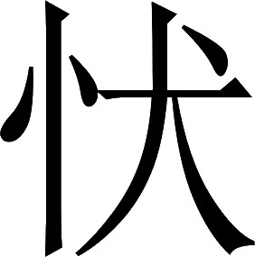

吴书 · 卷二
吴主传第二
孙权，字仲谋。他的哥哥孙策平定江东各郡之后，当时孙权十五岁，就担任了阳羡县长。后来吴郡举荐他为孝廉，扬州举荐他为茂才；代理奉义校尉职务。
汉朝因为孙策从远方来述职进贡，忠心可嘉，派使者刘琬到江东去向孙策宣布给予赏赐的诏书。刘琬对人说：“我看孙氏兄弟：虽然都才能优秀见识通达，然而享受福禄的时间都不长久。只有孙策的二弟孝廉孙权，外表和容貌奇特雄伟，骨骼形体很不寻常；有大贵之相，而且寿命又长。您试着记住这一点！”
建安四年，从策征庐江太守刘勋。勋破，进讨黄祖于沙羡〖1〗。
汉献帝建安四年（公元 199），孙权随从孙策征讨庐江郡太守刘勋。把刘勋击败后，又进兵到沙羡县讨伐黄祖。
注释
注释 〖1〗
沙羡（yí）：县名。县治在今湖北武汉市江夏区西。
建安五年（公元 200），孙策去世，把权位交给孙权；孙权一直哀哭不止。孙策的长史张昭对孙权说：“孝廉啊！这难道是哀哭的时候吗？周公订立了父母死后儿子要服丧三年的制度，但是他死后儿子伯禽并没有遵守；伯禽也不想违背父亲的规定，可是时势不允许他这么办啊。何况现今奸恶的人竞相起事，就像豺狼布满了道路；这时您却想哀哭亲人，顾及礼制；岂不等于是开门请盗贼进家吗？这可算不上是有仁爱之心啊！”于是张昭脱下孙权的丧服换上官服，把他扶上马，让他出去巡察军队。
注释
注释 〖2〗
五年：建安五年（公元 200）。
注释 〖3〗
宁：难道（是）。
注释 〖4〗
周公：姬姓，名旦。西周武王的弟弟。因采邑在周（今陕西岐山县北），故称周公。曾助武王灭商，武王死后又辅佐成王。传见《史记》卷三十三。法：指父母死儿子要服丧三年的礼制。伯禽：周公的儿子。
注释 〖5〗
时：时势。
注释 〖6〗
奸宄（guǐ）：奸恶。
注释 〖7〗
揖：礼让。
注释 〖8〗
改易权服：指脱下孙权穿的丧服而换上官服。
裴注
裴注 ﹝一﹞
臣松之按《礼记•曾子问》：“子夏曰：‘三年之丧，金革之事无避也者，礼与？初有司与？’孔子曰：‘吾闻诸老聃曰：昔者鲁公伯禽，有为为之也。’”郑玄注曰：“周人卒哭而致事。时有徐戎作难，伯禽卒哭而征之：急王事也。”昭所云“伯禽不师”，盖谓此也。
这时，孙氏所控制的地域只有会稽、吴、丹杨、豫章、庐陵五郡，而且就是这五郡的险峻深山也还没有完全服从；江东著名的世家大族，分布在地方；从长江以北前来投奔的人士，则在观望江东前途的安危以便决定去留，这两类人物都还没有与孙氏形成稳固的君臣关系。张昭、周瑜等人则认为孙权是可以与之共创大业的领袖，所以献出诚心拥戴他。
注释
注释 〖9〗
天下英豪：这里指江东当地的著名世家大族。如吴郡吴县的顾、陆、朱、张四氏，会稽郡余姚县的虞氏，山阴县的贺氏等。这些家族世代为官，族大人多，在江东有很大的影响。能否争取到他们的全力支持，关系到孙氏政权在江东是否能长期稳定存在。孙权继位后，采取多种办法争取江东世家大族的支持。对其中最有社会影响的吴县顾氏和陆氏，不仅在政治上给以重用，而且还用联姻的手段使彼此利益结合。分见本书卷五十二《顾雍传》、卷五十八《陆逊传》。参考拙著《魏晋南朝江东世家大族述论》（台北文津出版社，1991 年出版）上篇第二章。
注释 〖10〗
宾旅寄寓之士：这里指从长江北岸地区前来投奔的人士。
注释 〖11〗
谓：认为。
曹操向朝廷上表推举孙权为讨虏将军，兼任会稽郡太守；孙权驻扎在吴县，让郡丞到会稽郡的治所山阴县去，代行处理公务文书。他用师长的礼节对待张昭；而任用周瑜、程普、吕范等人为将领；他又招纳优秀人才，聘求社会名流，鲁肃、诸葛瑾等人开始成为他的上宾。他还分配部署众将，前往险峻的深山去安抚山越人，讨伐其中不服从命令的武装势力。
注释
注释 〖12〗
讨虏将军：官名。领兵征伐。
注释 〖13〗
吴：县名。县治在今江苏苏州市。
注释 〖14〗
丞：官名。即郡丞。郡的副行政长官，协助太守处理郡务。之郡：到会稽郡。行文书事：即代理太守职务。据本书卷五十二《顾雍传》，当时代孙权处理会稽郡务的就是江东世家大族代表人物顾雍。
注释 〖15〗
程普：传见本书卷五十五。
注释 〖16〗
鲁肃（公元 172—217）：传见本书卷五十四。诸葛瑾（公元 174—241）：传见本书卷五十二。
注释 〖17〗
山越：当时江东的山区，有大量还处于落后社会阶段的居民。他们当中有的是古越族的后裔，有的则是为了躲避战乱或徭役租税而从平原逃到山区的汉族百姓。他们都被称为山越。孙吴政权曾对山越发动长期的军事围捕，把壮丁编入军队，其他人则就地设置行政机构加以管理，并强制从事生产。孙吴政权的这一重大政治措施，在客观上促进了江东地区经济的深入开发，影响深远。
裴注
裴注 ﹝二﹞
《江表传》曰：“初，策表用李术为庐江太守；策亡之后，术不肯事权，而多纳其亡叛。权移书求索，术报曰：‘有德见归，无德见叛：不应复还！’权大怒，乃以状白曹公曰：‘严刺史昔为公所用，又是州举将；而李术凶恶，轻犯汉制，残害州司，肆其无道：宜速诛灭，以惩丑类！今欲讨之，进为国朝扫除鲸鲵，退为举将报塞怨仇：此天下达义，夙夜所甘心。术必惧诛，复诡说求救。明公所居，阿衡之任，海内所瞻；愿敕执事，勿复听受。’是岁，举兵攻术于皖城。术闭门自守，求救于曹公。曹公不救，粮食乏尽，妇女或丸泥而吞之。遂屠其城，枭术首，徙其部曲（三）〔二〕万余人。”
建安八年（公元 203），孙权率军讨伐西边的黄祖，击溃了对方的水军，只剩城池没有攻下；而这时山越人又发起反抗，孙权率军回还经过豫章郡时，派吕范平定鄱阳县的山越，程普讨伐乐安县的山越；太史慈兼任海昏县令，韩当、周泰、吕蒙等人前往社会秩序动荡而不易治理的各县担任县令、县长。
裴注
裴注 ﹝三﹞
《吴录》曰：“是时，权大会官僚，沈友有所是非；令人扶出，谓曰：‘人言卿欲反！’友知不得脱，乃曰：‘主上在许，有无君之心者，可谓非反乎！’遂杀之。友字子正。吴郡人。年十一，华歆行风俗，见而异之，因呼曰：‘沈郎！可登车语乎？’友逡巡却曰：‘君子讲好，会宴以礼。今仁义陵迟，圣道渐坏；先生衔命，将以裨补先王之教，整齐风俗；而轻脱威仪，犹负薪救火，无乃更崇其炽乎？’歆惭曰：‘自桓、灵以来，虽多英彦，未有幼童若此者！’弱冠博学，多所贯综；善属文辞，兼好武事。注《孙子兵法》。又辩于口，每所至，众人皆默然，莫与为对。咸言其笔之妙，舌之妙，刀之妙：三者，皆过绝于人。权以礼聘。既至，论王霸之略，当时之务；权敛容敬焉。陈荆州宜并之计，纳之。正色立朝，清议峻厉；为庸臣所谮，诬以谋反。权亦以终不为己用，故害之。时年二十九。”
十二年〖31〗，西征黄祖，虏其人民而还。
建安十二年（公元 207），孙权再次率军讨伐西边的黄祖，俘虏对方一部分百姓后撤回。
注释
注释 〖31〗
十二年：建安十二年（公元 207）。
建安十三年（公元 208）春天，孙权第三次进攻黄祖。黄祖先派水军迎战，都尉吕蒙打败对方的先头部队；接着凌统、董袭等将指挥全部精锐将士猛攻，终于攻克黄祖据守的城池并大肆屠杀。黄祖空身一人逃走。被骑兵冯则追上后砍下头颅，俘虏了对方的男女百姓共几万人。
这一年，孙权又派贺齐讨伐黟、歙二县的山越。分出歙县的大部分土地设立始新、新定、黎阳、休阳四县，以上述六县为新都郡。
荆州牧刘表去世；鲁肃请求带着孙权的指命去向刘表的两个儿子表示哀悼刘表之情，同时借机观察荆州事态变化。鲁肃还没有到达，而曹操的大军已经南下兵临荆州。刘表的儿子刘琮带领全体部众投降，在荆州的刘备想往南渡过长江。鲁肃与他相见，传达了孙权的意思，并为刘备分析了事情的成败。刘备听从劝告推进到夏口驻扎，派诸葛亮东下去见孙权。孙权命令周瑜、程普等将出发去迎战曹操。当时，曹操刚刚收纳了刘表的人马，势力非常强盛；议论的臣僚们都闻风丧胆，大多数人竭力劝孙权投降去迎接曹操。唯有周瑜、鲁肃坚持抵抗的主张，与孙权的意见相同。于是孙权任命周瑜、程普为左督、右督，各自统领一万精兵；与刘备一同向西推进，与曹操的大军在赤壁相遇，结果把曹军打得大败。曹操烧掉残余的船只后，往北方撤退，士兵饥病交加，死亡了一大半。
注释
注释 〖8〗
乞：请求。
注释 〖9〗
琮：即刘琮。事见本书卷六《刘表传》。
注释 〖10〗
刘备（公元 161—223）：传见本书卷三十二。
注释 〖11〗
旨：意思。
注释 〖12〗
夏口：地名。在今湖北武汉市长江南岸。
注释 〖13〗
诸葛亮（公元181—234）：传见本书卷三十五。
注释 〖14〗
左右督：官名。即左督、右督。当时孙吴第一线的作战军队分为左、右两部。其司令长官分别是左督、右督。
注释 〖15〗
赤壁：地名。决定曹操能否向长江以南扩展势力范围的著名古战场。与官渡之战、猇亭之战构成确定三国鼎立版图基本格局的三大战役。具体位置有多种说法，但都认为在今湖北境内的长江之滨。其中，主张赤壁在江北汉阳、黄冈的说法与《三国志》记载不符，难以使人信服。认为赤壁在江南者有三说：即蒲圻县西北（《括地志》、《通典》、《元和郡县志》）、嘉鱼县东北（《大清一统志》）、武昌县西（《水经注》）。蒲圻赤壁与北岸的乌林相对，与《三国志》的记载相吻合。现今又在这里不断发掘出孙吴时期的兵器等文物多件。结合当时战况与现存的遗物和遗迹，当以赤壁在蒲圻西北为是。蒲圻县已经国家批准，正式更名为赤壁市。赤壁市西北约 40 公里长江南岸之滨的赤壁山，是赤壁古战场所在地，尚有“赤壁”题刻、翼江亭等名胜。
裴注
裴注 ﹝四﹞
《江表传》载：“曹公与权书曰：‘近者奉辞伐罪，（旄）〔旌〕南指，刘琮束手。今治水步八十万众，方与将军会猎于吴！’权得书，以示群臣，莫不响震失色。”
刘备、周瑜又乘胜追到南郡。曹操只好退回北方，留下曹仁、徐晃在南郡的治所江陵城坚守，又派乐进驻守江陵北面的襄阳。这时吴将甘宁在夷陵县，被曹仁的人马包围；周瑜采纳吕蒙的计策，留下凌统抵抗曹仁，自己带了一半的军队前去援救甘宁，结果得胜而回。
孙权亲自率领大军在淮南围攻合肥。又派张昭进攻九江郡的当涂县，张昭作战失利。而孙权进攻了一个多月也没有拿下城池。曹操从荆州退回北方后，立即派部将张喜带领骑兵驰援合肥；结果他还未赶到，孙权就已撤退。
刘备表权行车骑将军，领徐州牧；备领荆州牧，屯公安〖24〗。
刘备上表朝廷推举孙权代理车骑将军职务，兼任徐州牧；而刘备自己则兼任荆州牧，驻扎在公安。
注释
注释 〖24〗
公安：地名。在今湖北公安县西北。
建安十五年（公元 210），孙权分出豫章郡一部分土地，设置鄱阳郡；又分出长沙郡的一部分土地，设置汉昌郡，以鲁肃为汉昌郡太守，驻扎在陆口。
注释
注释 〖3〗
石头：城名。在今江苏南京市内西面清凉山一带。石头城位于建业西部的制高点，西接长江，居高临下，控制进出建业的水道，形成建业的坚固屏障。现今尚留存高峻的城墙一段，其紫红色的墙基或高或低，即是孙吴当时建城的实物。附近山顶还有烽火台等遗迹留存。
注释 〖4〗
濡须坞：军事壁垒名。在今安徽含山县西南裕溪河两岸。裕溪河北段当时称濡须水，南接长江，北通巢湖，是孙吴水军由长江北上淮南和曹魏水军由淮南南下长江的要道。孙权听从大将吕蒙的建议，在濡须水两岸修筑弯月形壁垒，配备强弩一万张，控扼水道，从此这里成为孙吴军事重要据点。此后便不断出动水军从巢湖进攻合肥，迫使后来曹魏守将满宠，放弃临近巢湖的合肥旧城，后退到西面险山之上另筑合肥新城据守。
建安十八年（公元 213）正月，曹操进攻濡须。孙权在这里与对方相持一个多月。曹操观察孙权的军队，很是赞叹它的整齐威严，于是下令退军。
裴注
裴注 ﹝一﹞
《吴历》曰：“曹公出濡须，作油船，夜渡洲上。权以水军围取，得三千余人，其没溺者亦数千人。权数挑战，公坚守不出。权乃自来，乘轻船，从濡须口入公军；诸将皆以为是挑战者，欲击之。公曰：‘此必孙权！欲身见吾军部伍也。’敕军中皆精严，弓弩不得妄发。权行五六里，回还作鼓吹。公见舟船、器仗，军伍整肃，喟然叹曰：‘生子当如孙仲谋！刘景升儿子，若豚犬耳！’权为笺与曹公，说：‘春水方生，公宜速去。’别纸言：‘足下不死，孤不得安！’曹公语诸将曰：‘孙权不欺孤！’乃撤军还。”
《魏略》曰：“权乘大船，来观军。公使弓弩乱发，箭著其船，船偏重将覆；权因回船，复以一面受箭；箭均船平，乃还。”
当初，曹操担心滨临长江北岸的各个郡县百姓被孙权掠走，下令让他们往北方内地迁移。不料这些地方的民众反而受到惊动，从庐江、九江、蕲春、广陵等郡向南渡过长江逃跑的有十几万户之多；结果长江下游的北岸沿江地区人口急剧减少，在合肥以南只剩下皖县一座城池。
建安十九年（公元 214）五月，孙权出兵进攻皖县。当年的闰月，攻下城池，抓获曹操委派的庐江郡太守朱光和军事参谋董和，还俘虏男女军民几万人。
是岁，刘备定蜀。
这一年，刘备取得益州。
第二年，孙权因为刘备已经有了益州，就派诸葛瑾前去请求刘备让出荆州各郡。刘备不同意，说：“我正在打凉州的主意；平定了凉州之后，就把荆州都给你们。”孙权得知后说：“这是借了荆州不还，反而想说些空话来拖延时间！”于是他委派了荆州南部长沙、零陵、桂阳三郡的行政长官前去接管各地。关羽又把这些官员全部赶走。
孙权大怒，立即派吕蒙指挥鲜于丹、徐忠、孙规诸将，带着二万精兵前去进攻这三郡；同时命令鲁肃带领一万人马驻扎在巴丘，以抵御南下救援的关羽；孙权本人则进驻陆口，以便对各路军队进行调度指挥。
吕蒙的军队到达后，长沙、桂阳二郡很快投降，只有零陵郡太守郝普还坚持抵抗。碰上这时刘备亲自率军从益州赶到公安援助，并派关羽带领三万人马杀到益阳；孙权急召吕蒙等将北上帮助鲁肃抵抗关羽。吕蒙派人前去劝诱郝普，郝普投降，吕蒙全部俘取了三个郡的敌方将领和郡太守；于是立即领兵北上，与孙皎、潘璋和鲁肃合兵之后一齐向前推进，在益阳挡住关羽。
双方还没有交战，恰巧这时曹操攻入了益州北面的汉中；刘备怕丢掉益州，赶忙派使者向孙权求和。孙权让诸葛瑾去作回复，双方重新恢复同盟友好关系。于是分割荆州：长沙、江夏、桂阳这东面三郡属于孙权；南郡、零陵、武陵这西面三郡属于刘备。刘备回到益州，曹操本人已离开汉中北归。
注释
注释 〖12〗
汉中：郡名。治所在今陕西汉中市。
注释 〖13〗
江夏：郡名。治所在今湖北鄂州市。
注释 〖14〗
武陵：郡名。治所在今湖南常德市。以上是孙、刘两方在荆州的第一次武装冲突，冲突根源在于两方都想取得荆州这一战略要地的控制权。赤壁之战后，荆州七郡除南阳还在曹操手中外，孙权取得南郡、江夏，刘备取得长沙、零陵、桂阳、武陵。后来刘备又从孙权手中借到南郡，形成独占五郡的局面。刘备取得益州，实力大增，对孙权构成侧翼的威胁，所以孙权立即抵制，出兵攻占南三郡。冲突以双方暂时妥协结束，刘备让出长沙、桂阳，孙权退还零陵，大体以湘水为界，各占三郡。但是冲突的根源并未完全消除，由此导致后来的袭杀关羽和夷陵大战。
孙权从陆口东还，又领兵攻打合肥。由于未能得手，他下令撤军退回，军队全部上路。此时孙权与凌统、甘宁等将还在肥水渡口逍遥津的北岸，不防曹军猛将张辽突然发起袭击；凌统等人拼死捍卫孙权，孙权乘上一匹骏马从渡口的桥上飞跨过去，才得以脱险。
二十二年春〖3〗，权令都尉徐详，诣曹公请降；公报使修好，誓重结婚。
建安二十二年（公元 217）春天，孙权命令都尉徐详去向曹操请求投降；曹操派使者回访以建立友好关系，双方订立誓约并准备再次通婚。
注释
注释 〖3〗
二十二年：建安二十二年（公元 217 ）。
建安二十三年（公元 218）十月，孙权将要到吴县。亲自骑马在庱亭射猎猛虎，不料马被猛虎咬伤；孙权向猛虎投掷去双戟，猛虎才退却倒下。贴身侍卫张世又上前用戈击刺，终于把这只猛虎猎获到手。
建安二十四年（公元 219），关羽北上在襄阳围攻曹仁；曹操派左将军于禁去援救。碰上汉水暴涨，关羽出动水军，把于禁手下的三万步兵和骑兵全部俘虏，送往江陵，只剩下襄阳城还没有打下。孙权内心畏惧关羽力量增强，对外又想在曹操面前立功；于是写信给曹操，请求用讨伐关羽来贡献自己的诚心。而曹操又想让孙权与关羽相持和争斗以便收取渔人之利，立即让驿站马匹迅速送孙权的信到襄阳；指示曹仁用弩箭把这封信射到关羽军中让他看。关羽看了之后犹豫不决没有立即撤退。
当年闰十月，孙权出兵偷袭关羽。先派吕蒙攻打公安，抓获守将士仁；吕蒙推进到南郡，南郡太守麋芳又献城投降。吕蒙占领江陵之后，安抚老弱，把于禁从监牢中放出。与此同时孙权又派陆逊领兵去进攻江陵西面的宜都郡，先后占领秭归、枝江、夷道等县；然后回军驻扎在夷陵县，扼守三峡的东口以防备蜀军东下。这时关羽才撤军回当阳县，又转移到西边的麦城据守。孙权派人劝诱他，关羽假装同意投降，在城头上树立旗帜和假人之后，悄悄逃走；沿途人马不断逃散，最后只剩下十多名骑兵。孙权预先已派朱然、潘璋二将截断了他的去路。
注释
注释 〖12〗
闰月：据陈垣《二十史朔闰表》，当年闰十月。
注释 〖13〗
士仁：事见本书卷四十五《杨戏传》。
注释 〖14〗
麋芳：事见本书卷三十八《麋竺传》。
注释 〖15〗
宜都：郡名。治所在今湖北宜都市。
注释 〖16〗
秭归：县名。县治在今湖北秭归县。枝江：县名。在今湖北枝江市东北。夷道：县名。当时是宜都郡治所。
注释 〖17〗
峡口：地名。即长江三峡东口。在今湖北宜昌市西北。
注释 〖18〗
当阳：县名。在今湖北当阳市东北。
注释 〖19〗
麦城：地名。在今湖北当阳市东南。
注释 〖20〗
象人：假人。
注释 〖21〗
朱然（公元172—249）：传见本书卷五十五。
十二月，璋司马马忠，获羽及其子平、都督赵累等于章乡〖22〗，遂定荆州。
当年十二月，潘璋的司马马忠，在章乡抓获了关羽、关羽的儿子关平、都督赵累，完全平定了荆州。
注释
注释 〖22〗
章乡：地名。在今湖北当阳市东北。关羽之死，使孙吴完全控制了荆州的主要区域，并将双方的疆域分界，从原来的湘水流域，向西调整到三峡山区。三峡一线从此成为蜀、吴双方的稳定疆域线，直至三国时期结束。
是岁，大疫，尽除荆州民租税。
这一年，传染病大流行，孙权下令全部免除荆州百姓的租税。
曹操上表朝廷后任命孙权为骠骑将军，授予节杖，兼任荆州牧，封南昌侯。孙权派校尉梁寓到汉朝进贡，又让王惇到北方买马；还把从前俘虏的朱光放了回去。
冬，魏嗣王称尊号，改元为黄初。
冬天，新魏王曹丕称帝，改元为黄初。
黄初二年（公元 221）四月，刘备在益州称帝。孙权从公安迁到鄂县建都，改鄂县为武昌；以武昌、下雉、寻阳、阳新、柴桑、沙羡六县设置武昌郡。五月，建业县报告上天降下甘露。
注释
注释 〖4〗
二年：黄初二年（公元 221）。当时孙权还向曹魏称臣，所以用魏文帝的年号纪年。但是，《建康实录》卷一《太祖上》则记载孙权此时依然在用东汉献帝的年号“建安”，与此处史文不同。
注释 〖5〗
鄂：县名。县治在今湖北鄂州市。孙权在此建都后曾大规模修筑城墙和护城河。现今市区东面百子畈一带，还有墙、河遗址，并曾在此出土三国时期文物多件。
注释 〖6〗
下雉：县名。县治在今湖北阳新县东南。寻阳：县名。县治在今湖北武穴市东北。阳新：县名。县治在今湖北阳新县西南。柴桑：县名。县治在今湖北九江市西南。武昌：郡名。治所在当时的武昌县。
注释 〖7〗
甘露：凝结在草木叶上的一种带甜味液体。古代认为甘露降是吉祥征兆。
裴注
裴注 ﹝二﹞
《魏略》曰：“权闻魏文帝受禅，而刘备称帝；乃呼问知星者，己‘分野中星气何如’？遂有僭意。而以位次尚少，无以威众；又欲先卑而后踞之。为卑则可以假宠，后踞则必致讨；致讨然后可以怒众，众怒然后可以自大：故深绝蜀而专事魏。”
八月，孙权下令修筑武昌的城池。并向部下众将下达指示说：“存在时不忘记灭亡，安全时要考虑危险：这是古人很好的教诲。从前隽不疑是汉朝著名大臣，在安定太平的时代也随身不离刀剑；可见君子对于武器防备，是不能停止使用的。何况现今大家处身边境，和像豺狼一样的敌人打交道，而可以轻率疏忽，不想到突发的变故吗？近来听说众将出入，各人都崇尚谦虚俭约，不带随从的卫兵：这根本不是防患未然爱惜身体的用意！保护自己留下声名，以安慰君主和父母，与遭受危险欺辱相比哪种结果更好呢？大家应当好好警醒告诫自己，务必要从大局着想：以满足我的期望啊！”
按照古代圣明帝王立下的法制，应当依据臣下的道德设立爵位，依据臣下的功劳确定俸禄；功劳大的俸禄厚，道德高的赏赐多。所以辅佐周成王的周公，率领军队征伐的吕尚，都被赐予封地，并接受天子赏给的各种应当享有的器物：这是用来表彰大功臣，使贤能明哲的人受到特殊对待的办法。近代汉高祖在承受天命称帝的开初，也分出肥沃的土地封立八位异姓功臣为王。这是前朝的美事，后代帝王的借鉴啊。
注释
注释 〖19〗
叔旦：即周公。夹辅：在左右辅佐。
注释 〖20〗
太公：即吕尚。姜姓，吕氏，名望，一说字子牙。俗称姜太公。西周初年任太师，辅助武王灭商有功，封于齐国。传见《史记》卷三十二。鹰扬：威武的样子。这里指统率军队征伐。《诗经•大明》有赞美吕尚的诗句：“维师尚父，时维鹰扬。”
注释 〖21〗
启土宇：指接受封地建立藩国。
注释 〖22〗
备物：应当具备的器物。指天子根据功劳地位赐给臣下的礼仪用品。
注释 〖23〗
元功：大功。
注释 〖24〗
殊异：使……显得特殊不同。
注释 〖25〗
汉高祖：即刘邦（？—前195）。字季。沛县（今江苏沛县）人。西汉王朝的建立者。前 202 至前195 年在位。事详《史记》卷八、《汉书》卷一。
注释 〖26〗
膏腴：肥沃的土地。王八姓：立八位异姓功臣为王。八姓是楚王韩信、韩王信、淮南王英布、梁王彭越、长沙王吴芮、赵王张敖、燕王臧荼以及臧荼死后封燕王的卢绾。上列八姓都封于刘邦称帝时，见《史记》卷八《高祖本纪》。
注释 〖27〗
懿事：美事。
注释 〖28〗
元龟：大龟。古代用龟甲占卜，这里引申为借鉴。
朕没有什么德泽，禀承天运建立新王朝；君临天下，掌握上天赐予的权柄；很想向从前的圣明帝王看齐，所以彻夜思考坐到天亮。想到您天性忠诚，以杰出的安邦治国才干充当朕的辅佐；能够清楚地认识到上天安排的帝王传承顺序，以及王朝的新旧交替；所以远远派出使者，乘船从潜江、汉水前来；望风归附，呈上奏章称臣；同时献上丝织品、细葛布等南方的著名特产作为贡品，还把于禁等将领全部送回朝廷；忠贞内含，诚心外露；信誉可以铸刻在金属器物和石头上，义气能够覆盖高山大河：对以上这一切朕非常嘉许啊！
注释
注释 〖29〗
不德：无德。
注释 〖30〗
革命：古代认为君主受命于天，改朝换代是天命发生变革，所以叫做革命。
注释 〖31〗
齐：学习看齐。
注释 〖32〗
坐而待旦：形容君主一心想搞好政治而彻夜深思。
注释 〖33〗
忠亮：忠诚。
注释 〖34〗
命世：指具有命世之才。当时称安邦定国的杰出人才为命世之才。
注释 〖35〗
历数：帝王传承的先后顺序。古人认为这种顺序由上天早就安排好了。
注释 〖36〗
行人：使者。
注释 〖37〗
潜：上古时荆州河流名。
注释 〖38〗
抗疏：上疏。
注释 〖39〗
纳：交纳。纤：具有细花纹的丝织品。6（chī）：细葛布。
注释 〖40〗
诸将：指于禁等先被关羽俘获后又转到孙吴的曹魏将领。
注释 〖41〗
款诚：诚心。
裴注
裴注 ﹝三﹞
《禹贡》曰：“沱、潜既道。”注曰：“水自江出为沱，汉为潜。”
现在朕决定封您为吴王。特派持有节杖的太常卿、高平侯邢贞，前来授给您吴王的印玺、绶带和封爵文书；同时授给黄金制作的虎符从第一号到第五号的左半部份共五件，竹简制作的使符从第一号到第十号共十件；任命您为大将军，持有节杖，督察指挥交州的各路军队，兼任荆州牧；赏赐您青色的土壤，用白茅草包裹：您要宣扬朕的命令，以治理中原的东方。您应该上交过去保存的骠骑将军、南昌侯的印章、绶带、符、封爵文书等。现在朕还要加赏您九种赏赐品，您要恭敬地听取下面的指示：
注释
注释 〖42〗
使持节：一种表示享有诛杀威权的名号。魏晋时类似的名号有使持节、持节、假节三种。使持节可杀二千石以下的官员，持节可杀无官位的人，假节可在出兵时杀违犯军令者。上述名号通常给予统兵的重要将领，有时也给予担负特殊使命的官员。太常：官名。九卿之首。主管国家礼仪制度和祭祀活动。贞：即邢贞。事见本书卷五十五《徐盛传》。
注释 〖43〗
玺：印。绶：系在印上的丝绳。当时礼制，印的材质和绶的颜色，依官爵的高低而不同。王一级为金玺綟（lì）绶，綟是黑黄而带绿的颜色。金虎符：黄金制作的虎符。由两半合成虎形，受符者保存左半部分，右半部分保存在朝廷的符节台。中央政府要在地方征调军队，即以虎符的右半部分作为凭证。竹使符：汉魏制度，中央政府在地方进行军队以外的其他征调，要用竹使符作凭证。竹使符用竹简制成，外形像箭，上面镌刻篆形文字，对剖后将左半部分给受符者，右半部分也保存在符节台。
注释 〖44〗
大将军：官名。领兵将军的最高一级称号。地位还在三公之上。领兵征伐并且执掌朝政。这里给孙权以大将军职务主要是一种荣宠，并非要他到中央执政。督交州：官名。督察指挥交州的军事。交州为州名。治所在今广东广州市。
注释 〖45〗
锡：赏赐。青土：古代天子祭祀土地神的社坛，用五种颜色的土壤筑成，东方青色，南方赤色，西方白色，北方黑色，中央黄色。分封诸侯时，按其封地的方位取相应颜色的土壤，用白茅草包裹后给予受封者。孙权的封地吴郡在东偏南，所以赐给青土。
注释 〖46〗
苴（jū）：包裹。
注释 〖47〗
对扬：显扬。
注释 〖48〗
尹：治理。东夏：中原的东部。
注释 〖49〗
上：上交。
注释 〖50〗
九锡：九种赏赐品。
以君绥安东南，纲纪江外〖51〗；民夷安业〖52〗，无或携贰〖53〗。是用锡君大辂、戎辂各一〖54〗，玄牡二驷〖55〗。君务财劝农，仓库盈积。是用锡君衮冕之服〖56〗，赤舄副焉〖57〗。君化民以德，礼教兴行。是用锡君轩悬之乐〖58〗。君宣导休风〖59〗，怀柔百越〖60〗。是用锡君朱户以居〖61〗。君运其才谋，官方任贤。是用锡君纳陛以登〖62〗。君忠勇并奋，清除奸慝〖63〗。是用锡君虎贲之士百人〖64〗。君振威陵迈，宣力荆南〖65〗；枭灭凶丑〖66〗，罪人斯得。是用锡君&钺各一〖67〗。君文和于内，武信于外。是用锡君彤弓一、彤矢百、玈弓十、玈矢千〖68〗。君以忠肃为基，恭俭为德。是用锡君秬鬯一卣〖69〗，圭瓒副焉〖70〗。
因为您能安抚东南，总管长江以南地区，汉族和少数族居民都安居乐业，没有人怀有二心。所以赐给您礼仪专车、作战兵车各一辆，黑色的拉车公马两套共八匹。因为您能发展经济鼓励农业生产，仓库里粮食充足。所以赐给您诸侯的礼服、礼帽，配以红色的鞋子。因为您能用道德教化民众，礼仪和教育得到蓬勃发展。所以赐给您三面悬挂的乐器一套。因为您能宣扬美好的风尚，招来南方各地的越族并加以安抚。所以赐给您红色的大门居住。因为您能运用才智谋略，任用贤能的人才充当官员。所以赐给您暗设在宫殿檐下的阶梯以便登上殿堂。因为您能同时发扬忠诚和勇敢，扫除奸恶的人。所以赐给您一百名侍卫朕的虎贲勇士。因为您能显示威风跨步前进，在荆州南部使用武力，诛灭关羽，抓到罪人。所以赐给您斧、钺各一件。因为您能对内用文教使上下和睦，对外用武力使远近信服。所以赐给您红色的弓一张，红色的箭一百支，黑色的弓十张，黑色的箭一千支。因为您能以忠诚严肃为根本，树立恭顺俭朴的品德。所以赐给您一罐用黑黍和香草酿制的美酒，再配以圭和瓒。
注释
注释 〖51〗
纲纪：总管。江外：江南。
注释 〖52〗
民夷：汉族与少数族人民。
注释 〖53〗
携贰：怀有二心。
注释 〖54〗
大辂（lù）：礼仪专车。戎辂：作战的兵车。
注释 〖55〗
玄牡：黑色的公马。驷：拉车的四匹马合称一驷。
注释 〖56〗
衮（gǔn）：天子或上公所穿的礼服。冕：天子、诸侯和官员戴的礼冠。
注释 〖57〗
赤舄（xì）：红鞋。
注释 〖58〗
轩悬：三面悬挂乐器。周代礼制，天子奏乐时四面悬挂乐器，称宫悬。诸侯轩悬。
注释 〖59〗
休风：美好的风尚。
注释 〖60〗
怀柔：招徕并加以安抚。百越：对南方越族的泛称。
注释 〖61〗
朱户：红色大门。
注释 〖62〗
纳陛：暗设在宫殿檐下的登殿阶梯。
注释 〖63〗
奸慝（tè）：奸恶。
注释 〖64〗
虎贲（bēn）：侍从保卫君主的武士名称。
注释 〖65〗
宣力：显示力量。
注释 〖66〗
凶丑：指关羽。
注释 〖67〗
&（fū）：斧。&和钺都是天子的仪仗兵器。
注释 〖68〗
彤：红色。玈（lú）：黑色。
注释 〖69〗
秬鬯（jù chàng）：一种用黑黍和香草酿造的酒。用于祭祀。卣（yǒu）：盛酒的容器。
注释 〖70〗
圭：上尖下方的长形玉版。用作封爵授官的凭信。瓒：玉勺。祭祀时舀酒浇地的器具。
裴注
裴注 ﹝四﹞
《江表传》曰：“权群臣议，以为‘宜称上将军、九州伯，不应受魏封’。权曰：‘九州伯，于古未闻也；昔沛公，亦受项羽拜为汉王：此盖时宜耳，复何损邪？’遂受之。”孙盛曰：“昔伯夷、叔齐不屈有周，鲁仲连不为秦民。夫以匹夫之志，犹义不辱；况列国之君三分天下，而可二三其节，或臣或否乎？余观吴、蜀，咸称奉汉；至于汉代，莫能固秉臣节。君子是以知其不能克昌厥后，卒见吞于大国也。向使权从群臣之议，终身称汉将；岂不义悲六合，仁感百世哉！”
这一年，刘备本人带领大军前来进攻，到达巫县、秭归县一带。还派遣使者引诱武陵郡的少数族，授给他们官员的印章和证件，许诺给他们封赏；于是该郡各县以及五溪一带的少数族百姓都反叛转而支持蜀国。孙权委任陆逊为总指挥官，指挥朱然、潘璋等将抵御刘备。
这时孙权又派都尉赵咨出使曹魏，魏文帝问他说：“吴王是什么样的主事者啊？”赵咨回答说：“他聪慧、英明、仁爱、睿智，是具有雄心、谋略的主事者呀！”魏文帝问他具体事例，赵咨说：“从普通人中招纳了鲁肃，是他的聪慧；在军队中提拔出吕蒙，是他的英明；俘获于禁而不杀害，是他的仁爱；兵不血刃就夺取了荆州，是他的睿智；占据扬、荆、交三州而虎视天下，是他的雄心；屈身服从陛下，是他的谋略啊。”
注释
注释 〖78〗
状：具体情况。
注释 〖79〗
凡品：指普通人。
注释 〖80〗
行（háng）阵：军队的行列阵形。
注释 〖81〗
三州：指扬州、荆州和交州。当时孙权占有前两州的大部和交州的全部。
裴注
裴注 ﹝五﹞
《吴书》曰：“咨，字德度，南阳人。博闻多识，应对辩捷。权为吴王，擢中大夫。使魏，魏文帝善之，嘲咨曰：‘吴王颇知学乎？’咨曰：‘吴王浮江万艘，带甲百万；任贤使能，志存经略；虽有余闲，博览书传，历史籍，采奇异：不效诸生寻章摘句而已。’帝曰：‘吴可征不？’咨对曰：‘大国有征伐之兵，小国有备御之固。’又曰：‘吴难魏不？’咨曰：‘带甲百万，江、汉为池：何难之有？’又曰：‘吴如大夫者几人？’咨日：‘聪明特达者八九十人；如臣之比，车载斗量，不可胜数！’咨频载使，北人敬异。权闻而嘉之，拜骑都尉。咨言曰：‘观北方，终不能守盟。今日之计，朝廷承汉四百之际，应东南之运；宜改年号，正服色，以应天顺民。’权纳之。”
魏文帝想封给孙权长子孙登以爵位；孙权以孙登年幼为由，上书推托，又派西曹掾沈珩去向曹丕表示感谢，同时呈献南方的土特产品。接着孙权宣布立孙登为王太子。
裴注
裴注 ﹝六﹞
《吴书》曰：“珩，字仲山，吴郡人。少（总）〔综〕经艺，尤善《春秋》内、外传。权以珩有智谋，能专对，乃使至魏。魏文帝问曰：‘吴嫌魏东向乎？’珩曰：‘不嫌。’曰：‘何以？’曰：‘信恃旧盟，言归于好，是以不嫌。若魏渝盟，自有预备。’又问：‘闻太子当来，宁然乎？’珩曰：‘臣在东朝，朝不坐，宴不与；若此之议，无所闻也。’文帝善之，乃引珩自近，谈语终日。珩随事响应，无所屈服。珩还，言曰：‘臣密参侍中刘晔，数为贼设奸计，终不久悫。臣闻兵家旧论：不恃敌之不我犯，恃我之不可犯。今为朝廷虑之，且当省息他役，惟务农桑以广军资；修缮舟车，增作战具，令皆兼盈；抚养兵民，使各得其所；揽延英俊，奖励将士：则天下可图矣！’以奉使有称，封永安乡侯，官至少府。”
裴注 ﹝七﹞
《江表传》曰：“是岁，魏文帝遣使求雀头香、大贝、明珠、象牙、犀角、玳瑁、孔雀、翡翠、斗鸭、长鸣鸡。群臣奏曰：‘荆、扬二州，贡有常典；魏所求珍玩之物，非礼也：宜勿与。’权曰：‘昔惠施尊齐为王，客难之曰：“公之学，去尊；今王齐，何其倒也？”惠子曰：“有人于此，欲击其爱子之头，而石可以代之；子头所重，而石所轻也：以轻代重，何为不可乎？”方有事于西北，江表元元，恃主为命，非我爱子邪？彼所求者，于我瓦石耳：孤何惜焉？彼在谅暗之中，而所求若此，宁可与言礼哉！’皆具以与之。”
孙权黄武元年（公元 222）春正月，陆逊部署将军宋谦等，进攻蜀军的五座营地；全部攻破，斩了对方的将领。三月，鄱阳郡报告有黄龙出现。
蜀军分兵占据沿长江两岸的险要地形，前后建立了五十多处营地；陆逊根据敌军兵力的多少，相应派遣人马抵御。从当年正月到闰六月，把蜀军打得大败而逃，在战场上蜀军被杀和放下武器投降的总共有几万人；刘备仓皇逃跑，仅仅自己得免一死。
裴注
裴注 ﹝一﹞
《吴历》曰：“权以使聘魏，具上破备获印绶及首级、所得土地；并表将吏功勤宜加爵赏之意。文帝报使，致鼲子裘、明光铠、騑马；又以素书所作《典论》及诗赋，与权。”
《魏书》载诏答曰：“老虏边窟越险深入，旷日持久；内迫疲弊，外困智力；故现身于鸡头，分兵拟西陵：其计不过谓可转足前迹以摇动江东。根未著地，摧折其支；虽未刳备五脏，使身首分离；其所降诛，亦足使虏部众凶惧。昔吴汉先烧荆门，后发夷陵，而子阳无所逃其死；来歙始袭略阳，文叔喜之，而知隗嚣无所施其巧：今讨此虏，正似其事。将军勉建方略，务全独克！”
当初，孙权外边装出服从曹魏，而内心并不真诚。魏朝想派侍中辛毗、尚书桓阶前往江南去和孙权结盟起誓，并且让孙权送太子孙登到魏朝京城洛阳当人质；孙权却推托不让辛、桓二人入境。
秋九月，魏文帝命令曹休、张辽、臧霸出兵进攻洞口；曹仁出兵进攻濡须；曹真、夏侯尚、张郃、徐晃围攻南郡。孙权派吕范指挥五支军队，会合水军抵御曹休这一路；又派诸葛瑾、潘璋、杨粲三将驰援南郡；还委任朱桓为濡须战区的指挥官以抵御曹仁。
当时扬州和交州的少数族大多不服从孙吴统治，内部的困难还没有克服；所以孙权以极其谦卑的措辞又向魏文帝上书，请求给自己改过自新的机会，说：“如果自己罪恶难以赦免，决不能放过；那么请求奉还土地百姓给朝廷，然后到交州寄居生存，以度余生。”
文帝报曰：“君生于扰攘之际，本有从横之志〖16〗；降身奉国，以享兹祚〖17〗。自君策名以来〖18〗，贡献盈路；讨备之功，国朝仰成〖19〗。埋而掘之，古人之所耻；﹝二﹞朕之与君，大义已定。岂乐劳师，远临江汉？廊庙之议〖20〗，王者所不得专〖21〗。三公上君过失，皆有本末。朕以不明，虽有曾母投杼之疑〖22〗；犹冀言者不信〖23〗，以为国福。故先遣使者犒劳，又遣尚书、侍中践修前言，以定任子。君遂设辞，不欲使进：议者怪之。﹝三﹞又前都尉浩周劝君遣子，乃实朝臣交谋，以此卜君〖24〗；君果有辞，外引隗嚣遣子不终〖25〗，内喻窦融守忠而已〖26〗。世殊时异，人各有心。浩周之还，口陈指麾〖27〗；益令议者发明众嫌〖28〗，终始之本，无所据仗：故遂俯仰从群臣议〖29〗。今省上事〖30〗，款诚深至；心用慨然，凄怆动容。即日下诏，敕诸军：‘但深沟高垒，不得妄进！’若君必效忠节，以解疑议；登身朝到，夕召兵还：此言之诚，有如大江〖31〗！”﹝四﹞
魏文帝回答的诏书说：“您生在动乱时期，本有割据称雄的志向；后来因为能克制自己尊奉我国，才能享受目前这种福分。自从您向朝廷表示效忠以来，前来进献贡品的使者布满道路；讨伐刘备的功绩，朝廷也仰仗您才得以实现。把东西埋在地里后又挖出来，这是古人感到羞耻的事；朕和您之间，君臣的关系已经确定。难道说喜欢出动大军，远征长江、汉水地区吗？自古朝廷的议论，连帝王也不能一个人说了算。而现今三公报告您的过失，都有前后的详情。朕因为不英明，在许多人异口同声批评您时虽然也对您产生了怀疑，可是仍旧希望他们说的一切不是事实，认为这样才是国家的幸福。所以首先派使者前来犒劳为诛灭关羽出了力的将士，又派尚书桓阶、侍中辛毗前来实现从前我们商量好的话，把您送儿子孙登进京做人质一事确定下来。不料您却想出一些理由来拒绝，不让二人入境：使朝廷议论的人很感奇怪。再者此前朕派都尉浩周为使者前来劝您送儿子做人质，实际上是朝臣们共同出的主意，要用这来试验您的忠诚；结果您真的有话推托，先是引用从前的事例说隗嚣送了长子到京城做人质，最终仍然造了反，然后比喻自己就像窦融一样，不送儿子做人质也会始终保持忠诚不变。其实朝代不同时间有异，人各有心不会完全一样。但是，浩周回朝之后，口头陈述一切还加上手势比划；反倒让朝廷议论的人发出和表明了各种怀疑，使得您始终保持忠诚不变一类的话语，无法令人相信：所以朕才随从群臣的意见出动各路大军南下。现在看了您的上书，内心受到打动；不免产生怜悯之意，而态度也有所改变。即日朕就下诏，指令各路军队：只是就地挖深战壕修高壁垒，不准妄自前进！如果您一定要显示忠诚的节操，以排解人们的疑惑；只要您儿子孙登早上到达，当天晚上朕就召回各路大军回朝：这个诺言的效力，就像长江一样永远存在！”
注释
注释 〖16〗
从（zòng）横：指割据称雄。
注释 〖17〗
祚：福。
注释 〖18〗
策名：把姓名登记在朝廷的官员名册上。指效忠朝廷。
注释 〖19〗
仰成：仰仗（你而取得）成功。
注释 〖20〗
廊庙：指朝廷。
注释 〖21〗
专：专断。
注释 〖22〗
曾母：曾参的母亲。曾参是孔子的学生。鲁国有与曾参同姓名的人杀人行凶，人们以为是曾参所为，跑来告诉他的母亲。开始她还不信，后来信以为真，丢下织布的梭子翻墙逃走。事见《史记》卷七十一《甘茂列传》。投：丢下。杼（zhù ）：织布的梭子。
注释 〖23〗
冀：希望。不信：不确实。
注释 〖24〗
卜：试验。
注释 〖25〗
隗嚣（？—公元 33）：字纪孟。天水郡成纪（今甘肃秦安县）人。新莽末年，割据陇右，自称西州大将军。建武九年（公元33），被东汉军队击败，忧病而死。此前，他曾送长子到东汉京城洛阳做人质。传见《后汉书》卷十三。
注释 〖26〗
窦融（前 16—公元 62）：字周公。右扶风平陵（今陕西咸阳市西北）人。世代在河西地区任行政官吏。新莽末年，割据河西五郡。公元 32 年，帮助刘秀消灭隗嚣，归顺东汉王朝。后升任大司空，封安丰侯。传见《后汉书》卷二十二。
注释 〖27〗
指麾：手指挥动。
注释 〖28〗
发明：发出和表明。众嫌：各种怀疑。
注释 〖29〗
俯仰：随从的样子。从群臣议：指出兵威胁孙吴。
注释 〖30〗
省（xǐng）：阅看。上事：上呈的文书。当时习称公务文书为事。
注释 〖31〗
大江：指长江。
裴注
裴注 ﹝二﹞
《国语》曰：“狸埋之，狸掘之：是以无成功。”
裴注 ﹝三﹞
《魏略》载魏三公奏曰：“臣闻枝大者披心，尾大者不掉：有国有家之所慎也。昔汉承秦弊，天下新定；大国之王，臣节未尽。以萧、张之谋，不备录之，致使六王，前后反叛。已而伐之，戎车不辍。又文、景守成，忘战戢役；骄纵吴、楚，养虺成蛇，既为社稷大忧。盖前事之不忘，后事之师也。吴王孙权，幼竖小子，无尺寸之功；遭遇兵乱，因父兄之绪；少蒙翼卵煦伏之恩，长含鸱枭反逆之性；背弃天（地）〔施〕，罪恶积大。复与关羽，更相觇伺；逐利见便，挟为卑辞。先帝知权奸以求用，时以于禁败于水灾，等当讨羽，因以委权。先帝委裘下席，权不尽心诚在恻怛，欲因大丧，寡弱王室。希托董桃，传先帝令，乘未得报许，擅取襄阳；及见驱逐，乃更折节：邪辟之态，巧言如流。虽重驿累使，发遣禁等；内包隗嚣顾望之奸，外欲缓诛，支仰蜀贼。圣朝含弘，既加不忍，优而赦之，与之更始；猥乃割地王之，使南面称孤，兼官累位，礼备九命，名马百驷，以成其势：光宠显赫，古今无二。权为犬羊之姿，横被虎豹之文；不思靖力致死之节，以报无量不世之恩。臣每见所下权前后章表，又以愚意采察权旨：自以阻带江湖，负固不服；狃

累世，诈伪成功。上有尉佗、英布之计，下诵伍被屈强之辞：终非不侵不叛之臣。 〔臣〕 以为晁错不发削弱五侯之谋，则七国同衡，祸久而大；蒯通不决袭历下之策，则田横自虑，罪深变重。臣谨考之《周礼》九伐之法，平权凶恶：逆节萌生，见罪十五。……昔九黎乱德，黄帝加诛；项羽罪十，汉祖不舍。权所犯罪衅明白，非仁恩所养，宇宙所容。臣请免权官，鸿胪削爵土，捕治罪。敢有不从，移兵进讨；以明国典好恶之常，以静三州元元之苦。”其十五条，文多不载。
裴注 ﹝四﹞
《魏略》曰：
“浩周字孔异，上党人。建安中，仕为萧令，至徐州刺史。后领护于禁军；军没，为关羽所得。权袭羽，并得周，甚礼之。及文帝即王位，权乃遣周，为笺魏王曰：‘昔讨关羽，获于将军；即白先王，当发遣之。此乃奉款之心，不言而发。先王未深留意，而谓权中间复有异图。愚情""，用未果决；遂值先王委离国祚，殿下承统，下情始通。公私契阔，未获备举；是令本誓，未即昭显。梁寓传命，委曲周至，深知殿下以为意望。权之赤心，不敢有他；愿垂明恕，保权所执。谨遣浩周、东里衮；至情至实，皆周等所具。’
又曰：‘权本性空薄，文武不昭；昔承父兄成军之绪，得为先王所见奖饰；遂因国恩，抚绥东土。而中间寡虑，庶事不明；畏威忘德，以取重戾。先王恩仁，不忍遐弃；既释其宿罪，且开明信。虽致命虏廷，枭获关羽；功效浅薄，未报万一。事业未究，先王即世。殿下践阼，威仁流迈；私惧情愿，未蒙昭察。梁寓来到，具知殿下不遂疏远，必欲抚录，追本先绪。权之得此，欣然踊跃，心开目明，不胜其庆。权世受宠遇，分义深笃；今日之事，永执一心。惟察""，重垂含覆。’
又曰：‘先王以权推诚已验，军当引还；故除合肥之守，著南北之信：令权长驱，不复后顾。近得守将周泰、全琮等白事：过月六日，有马步七百，径到横江，又督将马和，复将四百人进到居巢；琮等闻有兵马渡江，视之，为兵马所击；临时交锋，大相杀伤。猝得此问，情用恐惧。权实在远，不预闻知；约敕无素，敢谢其罪？又闻张征东、朱横海，今复还合肥。先王盟要，由来未久；且权自度，未获罪衅，不审今者何以发起，牵军远次？事业未讫，甫当为国讨除贼备；重闻斯问，深使失图！凡远人所恃，在于明信；愿殿下克卒前分，开示坦然；使权誓命，得卒本规。凡所愿言，周等所当传也。’
初东里衮为于禁军司马，前与周俱没，又俱还到，有诏皆见之。帝问周等，周以为权必臣服；而东里衮，谓其不可必服。帝悦周言，以为有以知之。是岁冬，魏王受汉禅，遣使以权为吴王，诏使周与使者俱往。周既致诏命，时与权私宴，谓权曰：‘陛下未信王遣子入侍也，周以阖门百口明之！’权因字谓周曰：‘浩孔异！卿乃以举家百口保我，我当何言邪？’遂流涕沾襟。及与周别，又指天为誓。周还之后，权不遣子而设辞，帝乃久留其使。
到八月，权上书谢，又与周书曰：‘自道路开通，不忘修意。既新奉国命，加知起居，假归河北，故使情问，不获果至。望想之劳，曷云其已？孤以空暗，分信不昭；中间招罪，以取弃绝。幸蒙国恩，复见赦宥；喜乎与君，克卒本图。传不云乎：虽不能始，善终可也。’
又曰：‘昔君之来，欲令遣子入侍；于时倾心，欢以承命；徒以登年幼，欲假年岁之间耳。而赤情未蒙昭信，遂见讨责，常用惭怖。自顷国恩，复加开导；忘其前愆，取其后效：喜得因此，寻竟本誓。前已有表具说遣子之意，想君假还，已知之也。’又曰：‘今子当入侍，而未有妃耦；昔君念之，以为可上连缀宗室若夏侯氏；虽中间自弃，常奉戢在心。当垂宿念，为之先后；使获攀龙附骥，永自固定：其为分惠，岂有量哉！如是，欲遣孙长绪与小儿俱入，奉行礼聘，成之在君。’又曰：‘小儿年弱，加教训不足；念当与别，为之缅然！父子恩情，岂有已邪！又欲遣张子布追辅护之。孤性无余，凡所欲为，今尽宣露。惟恐赤心不（先）〔克〕畅达，是以具为君说之，宜明所以。’
于是诏曰：‘权前对浩周自陈，不敢自远，乐委质长为外臣；又前后辞旨，头尾击地：此鼠子自知不能保尔许地也。又今与周书，请以十二月遣子；复欲遣孙长绪、张子布随子俱来，彼二人皆权股肱心腹也。又欲为子于京师求妇，此权〔无〕异心之明效也。’帝既信权甘言，且谓周为得其真；而权但华伪，竟无遣子意。自是之后，帝既彰权罪；周亦见疏远，终身不用。”
权遂改年，临江拒守。
孙权看到这篇诏书后立即宣布改换年号，出动大军到长江一线防守。
冬十一月，出现大风，吕范的水军淹死几千人，余下的逃回江南。曹休让臧霸带五百艘快船，载着一万敢死队袭击徐陵，烧毁吴军的攻城车，杀死抢走几千人。吴将全琮、徐盛追杀了魏将尹卢，杀死和俘虏几百人。
十二月，孙权派太中大夫郑泉，到白帝城去见刘备，双方重新开始通使。然而孙权还与魏文帝相互往来，到后年才完全断绝关系。这一年改夷陵县为西陵县。
注释
注释 〖35〗
太中大夫：官名。侍从皇帝，回答皇帝的询问。白帝：城名。在今重庆市原奉节县东白帝山上。下临长江三峡西口，是当时益州的东大门。
裴注
裴注 ﹝五﹞
《江表传》曰：“权云：‘近得玄德书，已深引咎，求复旧好。前所以名西为蜀者，以汉帝尚存故耳；今汉已废，自可名为汉中王也。’”
《吴书》曰：“郑泉字文渊，陈郡人。博学有奇志，而性嗜酒。其闲居，每曰：‘愿得美酒，满五百斛船，以四时甘脆，置两头；反覆没饮之，惫即住而啖肴膳；酒有斗升减，随即益之：不亦快乎！’权以为郎中。尝与之言：‘卿好于众中面谏，或失礼敬：宁畏龙鳞乎？’对曰：‘臣闻君明臣直。今值朝廷上下无讳，实恃洪恩，不畏龙鳞。’后侍宴，权乃怖之，使提出，付有司促治罪。泉临出屡顾，权呼还，笑曰：‘卿言不畏龙鳞，何以临出而顾乎？’对曰：‘实恃恩覆，知无死忧；至当出< ，感惟威灵，不能不顾耳！’使蜀，刘备问曰：‘吴王何以不答吾书？得无以吾正名不宜乎？’泉曰：‘曹操父子陵轹汉室，终夺其位。殿下既为宗室，有维城之责；不荷戈执殳，为海内率先，而于是自名：未合天下之议，是以寡君未复书耳。’备甚惭恧。泉临卒，谓同类曰：‘必葬我陶家之侧，庶百岁之后，化而成土；幸见取为酒壶，实获我心矣！’”
黄武二年（公元 223）春正月，魏将曹真分兵攻占江陵县附近长江中的百里洲。这一月，吴军在江夏郡治所武昌县附近的来山上修筑城堡。孙权下令废止东汉以来沿用的《四分历》，改用《乾象历》。三月，魏将曹仁派将军常雕等人，带兵五千，乘坐装设有油脂浸涂的防护板的战船，在凌晨渡过濡须水中间的洲岛；曹仁的儿子曹泰，趁机对朱桓发动猛攻，朱桓出兵迎战曹泰；另派将军严圭击溃了常雕的人马。这一月，南下进攻的各路魏军都撤了回去。
注释
注释 〖1〗
二年：黄武二年（公元 233）。
注释 〖2〗
中州：江河中的洲岛。这里指当时江陵西面长江中的百里洲。
注释 〖3〗
山：此处当指江夏郡治所沙羡县所在的夏口山。即令湖北武汉市武昌区长江南岸的蛇山。当时有夏水北流至山下注入长江，故名夏口。孙权开始在此设置军事据点，加强长江中游的防御，从此成为兵家必争的要地。此后闻名天下的黄鹤楼，即由这一军事据点演变而来。
注释 〖4〗
四分：历法名。西汉武帝太初元年（前104）开始施用《太初历》。东汉章帝元和二年（公元 85）改用《四分历》。
注释 〖5〗
乾象历：历法名。东汉末年历法家刘洪所制定，是对《四分历》的改进。两种历法的岁首月份相同，但每月的初一日和闰月的安排不尽相同。
注释 〖6〗
油船：装设有油脂浸涂的防护板的战船。防护板起抵御刀箭等兵器进攻的作用。
裴注
裴注 ﹝一﹞
《江表传》曰：“权推五德之运，以为土行；用未祖、辰腊。”
《志林》曰：“土行以辰腊，得其数矣。土盛于戌，而以未祖，其义非也。土生于未，故未为坤初。是以《月令》：‘建未之月，祀黄精于郊，祖用其盛。’今祖用其始，岂应运乎？”
夏四月，孙权的各位臣僚劝他称帝，他不同意。刘备在白帝城去世。五月，曲阿县报告有甘露降下。此前，戏口的守将晋宗杀死将军王直，带领部下叛逃到魏国；魏国任命他为蕲春郡太守，多次侵犯吴国边境。六月，孙权命令将军贺齐，指挥糜芳、刘邵等突袭蕲春；刘邵等生擒了晋宗。
注释
注释 〖7〗
即尊号：指称帝。
裴注
裴注 ﹝二﹞
《江表传》曰：“权辞让曰：‘汉家堙替，不能存救；亦何心而竞乎！’群臣称天命符瑞，固重以请；权未之许，而谓将相曰：‘往年孤以玄德方向西鄙，故先命陆逊选众以待之。闻北部分，欲以助孤，孤内嫌其有挟；若不受其拜，是相折辱而促其速发，便当与西俱至，二处受敌，于孤为剧：故自抑按，就其封王。低屈之趣，诸君似未之尽：今故以此相解耳。’”
裴注 ﹝三﹞
《吴书》曰：“权遣立信都尉冯熙聘于蜀，吊备丧也。熙字子柔。颍川人。冯异之后也。权之为车骑，熙历东曹掾。使蜀还，为中大夫。后使于魏，文帝问曰：‘吴王若欲修宿好，宜当厉兵江关，悬旍巴蜀；而闻复遣修好，必有变故！’熙曰：‘臣闻西使直报问，且以观衅，非有谋也。’又曰：‘闻吴国比年灾旱，人物凋损；以大夫之明，观之何如？’熙对曰：‘吴王体量聪明，善于任使；赋政施役，每事必咨；教养宾旅，亲贤爱士；赏不择怨仇，而罚必加有罪：臣下皆感恩怀德，惟忠与义。带甲百万，谷帛如山；稻田沃野，民无饥岁：所谓金城汤池，强富之国也。以臣观之：轻重之分，未可量也！’帝不悦，以陈群与熙同郡，使群诱之；啖以重利，熙不为回。送至摩陂，欲困苦之。后又召还，未至；熙惧见迫不从，必危身辱命，乃引刀自刺，〔中乳房。〕御者觉之，不得死。权闻之，垂涕曰：‘此与苏武何异！’竟死于魏。”
秋八月，赦死罪。九月，魏文帝出广陵，望大江。曰：“彼有人焉，未可图也！”乃还。﹝五﹞
秋八月，宣布赦免死刑犯。九月，魏文帝率兵南下广陵，眺望滚滚长江。说：“对方有人啊，还不能打他们的主意呀！”于是撤军回去了。
裴注
裴注 ﹝五﹞
干宝《晋纪》曰：“魏文帝之在广陵，吴人大骇。乃临江为疑城，自石头至于江乘；车以木桢，衣以苇席，加采饰焉：一夕而成。魏人自江西望，甚惮之，遂退军。权令赵达算之，曰：‘曹丕走矣！虽然，吴衰庚子岁。’权曰：‘几何？’达屈指而计之，曰：‘五十八年。’权曰：‘今日之忧，不暇及远：此子孙事也！’”《吴录》曰：“是岁，蜀主又遣邓芝来聘，重结盟好。权谓芝曰：‘山民作乱，江边守兵多撤；虑曹丕乘空弄态，而反求和。议者以为：“内有不暇，幸来求和，于我有利；宜当与通，以自辨定。”恐西州不能明孤赤心，用致嫌疑。孤土地边外，间隙万端；而长江巨海，皆当防守；丕观衅而动，惟不见便：宁得忘此，复有他图！’”
裴注
裴注 ﹝六﹞
《吴录》曰：“邵字长绪。北海人。长八尺。为孔融功曹，融称曰：‘廊庙才也！’从刘繇于江东。及权统事，数陈便宜；以为应纳贡聘，权即从之。拜庐江太守，迁车骑长史。黄武初，为丞相，威远将军，封阳羡侯。张温、暨艳奏其事，邵辞位请罪；权释令复职。年六十三卒。”《志林》曰：“吴之创基，邵为首相；史无其传，窃常怪之。尝问刘声叔。声叔，博物君子也，云：‘推其名位，自应立传。项竣、（吴）〔丁〕孚时，已有注记此，云“与张惠恕不能”。后韦氏作史，盖惠恕之党，故不见书。’”
裴注 ﹝七﹞
《吴书》曰：“以尚书令陈化为太常。化字元耀。汝南人。博览众书，气干刚毅；长七尺九寸，雅有威容。为郎中令，使魏。魏文帝因酒酣，嘲问曰：‘吴、魏峙立，谁将平一海内者乎？’化对曰：‘《易》称帝出乎震；加闻先哲知命旧说，紫盖黄旗，运在东南。’帝曰：‘昔文王以西伯王天下，岂复在东乎？’化曰：‘周之初基，太伯在东；是以文王，能兴于西。’帝笑，无以难，心奇其辞。使毕当还，礼送甚厚。权以化奉命光国，拜犍为太守，置官属。顷之，迁太常，兼尚书令。正色立朝，（劝）〔敕〕子弟：废田业，绝治产；仰官廪禄，不与百姓争利。妻早亡，化以古事为鉴，乃不复娶。权闻而贵之，以其年壮，敕宗正：妻以宗室女；化固辞以疾，权不违其志。年出七十，乃上疏乞骸骨。遂爰居章安，卒于家。长子炽，字公熙。少有志操，能计算。卫将军全琮表称炽任大将军〔掾〕；赴召，道卒。”
〔秋七月，〕皖口言木连理〖13〗。
秋七月，皖口报告不同根的树木其枝干合长在一起。
注释
注释 〖13〗
皖口：地名。在今安徽安庆市西。是长江北岸支流皖水入长江处。木连理：不同根的树木其枝干合长在一起。古代把这视为吉祥的征兆。
冬十二月，鄱阳贼彭绮自称将军，攻没诸县，众数万人。
冬十二月，鄱阳郡的叛匪彭绮自称将军，攻陷各县，拥有人马几万人。
是岁，地连震。﹝八﹞
这一年，连续发生地震。
裴注
裴注 ﹝八﹞
《吴录》曰：“是冬，魏文帝至广陵，临江观兵；兵有十余万，旌旗弥数百里，有渡江之志。权严设固守。时大寒，冰，舟不得入江。帝见波涛汹涌，叹曰：‘嗟乎！固天所以隔南北也！’遂归。孙韶又遣将高寿等，率敢死之士五百人，于径路夜要之。帝大惊；寿等获副车、羽盖以还。”
黄武五年（公元226）春天，孙权下令说：“军队出动打仗的时间已经很久了，老百姓离开了农田；父子夫妇，也不能相互照顾：我非常怜悯他们！现在北方的敌人缩逃回去，边境之外没有战事；要下达公文到各州郡，采取宽和措施让人民得到休息。”这时，陆逊因为各地缺乏粮食，上表请求让众将在当地开垦土地实行屯田。孙权答复说：“您的建议很好啊！现在我和我的儿子也要亲自接受一片田地前去耕种，把我们座车的八条牛，分来拉四张犁；虽然赶不上古代亲自耕田的圣明君主，却也想和大家平均分担劳累啊。”
秋七月，孙权听说魏文帝驾崩，下令出兵征伐江夏郡，围攻石阳城；未能得手而退回。苍梧郡报告有凤凰出现。把丹杨、吴、会稽三郡交界的险峻深山地区十个县分出来，新设置东安郡；委任全琮为太守，讨伐平定当时的山越人。
冬十月，陆逊陈述有利而适当的政策，劝孙权施与德泽减轻刑罚，放宽赋税征收，停止征调兵员。又说：“大臣们忠诚正直的话，不敢充分陈述；请让您身边的侍从小臣们，常常把有利的建议报告给您知道。”
权报曰：“夫法令之设，欲以遏恶防邪，儆戒未然也。焉得不有刑罚，以威小人乎？此为先令后诛〖16〗，不欲使有犯者耳。君以为太重者，孤亦何利其然？但不得已而为之耳。今承来意，当重咨谋〖17〗，务从其可。且近臣有尽规之谏，亲戚有补察之箴；所以匡君正主，明忠信也。《书》载‘予违汝弼，汝无面从〖18〗’，孤岂不乐忠言以自裨补邪？而云‘不敢极陈’，何得为忠谠哉！若小臣之中，有可纳用者；宁得以人废言，而不采择乎？但谄媚取容〖19〗，虽暗亦所明识也〖20〗！至于发调者，徒以天下未定〖21〗，事以众济〖22〗。若徒守江东，修崇宽政；兵自足用，复用多为〖23〗？顾坐自守，可陋耳〖24〗。若不豫调，恐临时未可便用也。又孤与君，分义特异〖25〗，荣戚实同；来表云‘不敢随众容身苟免’，此实甘心所望于君也！”
孙权回答说：“法令的设置，是想阻遏凶恶防止奸邪，警醒和告诫人们今后不要犯过错啊。怎么能不设置刑罚，来威慑小人呢？这都是先申明法令后执行诛杀，不想让人去违犯它呀。您以为现今刑罚太重，我未必然就认为加强刑罚很有好处么？这是不得已而为之的事啊。而今接到您的意见，我将就此重新进行咨询和考虑，一定遵从恰当的意见。另外，您作为我亲近的大臣应当有畅所欲言的劝谏，作为我的姻亲应当有观察和弥补过失的忠告；这是为了匡正君主，并表明您自己的忠诚信义啊。《尚书》中记载尧对舜说的话是‘我有过错你应当辅正我，你不要当面顺从而背后非议’，我难道不喜欢采纳忠言以弥补自己的不足吗？而您却说‘不敢充分陈述’，这怎么算得上‘忠诚正直’呀？如果我身边的侍从小臣当中，有人的建议值得采用；我难道会因人废言，而不采纳吗？如果他们只知道谄媚求得我的欢心，我虽然愚昧也会清楚地看出来呀！至于征调兵员，只不过因为天下未定，事情要靠兵力强大才能成功，所以才这样做。如果只是坐守江东，推行宽和政治；兵力自然够用，还用得着多征调吗？但是我觉得坐守江东，未免志向太小应当受到鄙视啊。如果不预先征调兵员，恐怕临时就不能立即投入使用了。另外，我与您情谊特别不同，光荣和忧患都共同享受；您送来的表文中说自己不敢随从大家采取明哲保身的态度，这确实是我一心希望您做到的事啊！”
于是，孙权下令各有关部门把所有的规章条例写出，然后派郎中褚逢，带去给陆逊、诸葛瑾阅看；他们心里觉得不妥当的地方，请他们加以修改增删。
六年春正月〖31〗，诸将获彭绮。
黄武六年（公元227）春正月，诸将抓获鄱阳郡叛乱匪首彭绮。
注释
注释 〖31〗
六年：黄武六年（公元 227）。
闰月〖32〗，韩当子综，以其众降魏。
闰十二月，韩当的儿子韩综率领部下投降魏国。
注释
注释 〖32〗
闰月：据陈垣《二十史朔闰表》，当年闰十二月。
夏五月，鄱阳太守周鲂伪叛〖35〗，诱魏将曹休。
夏五月，鄱阳郡太守周鲂假装背叛吴国，引诱魏将曹休率军深入。
注释
注释 〖35〗
周鲂：传见本书卷六十。
注释
注释 〖36〗
石亭：地名。在今安徽潜山市东北。石亭大战为三国时期重要战役，是魏、吴两国间攻守态势的转折点。六年前的夷陵之战，使孙吴的西部边境完全安定下来。但是从那以后，其北部边境却受到曹魏方面的强大压力，致使割据江东达二十多年之久的孙权迟迟不敢称帝。石亭大战以曹军大败告终，从而结束曹军在淮南一直保持的进攻态势。相反孙吴却成为主动一方，屡次从淮南发动进攻，企图突入中原。战争一结束，孙权就开始称帝，接着又把首都迁回正对淮南易受威胁的建业。战争经过详见本书卷九《曹休传》、卷五十八《陆逊传》。
注释 〖37〗
大司马：官名。领兵将军中特别尊崇的名号。地位还在大将军之上，但不常置。领兵征伐。
黄龙元年春，公卿百司皆劝权正尊号〖1〗。
黄龙元年（公元229），公卿百官都劝孙权使用皇帝称号。
注释
注释 〖1〗
公卿：三公九卿。三公为太尉、司徒、司空。九卿为太常、光禄勋、卫尉、太仆、廷尉、大鸿胪、宗正、大司农、少府。百司：百官。
夏四月，夏口、武昌，并言黄龙、凤凰现。
夏四月，夏口、武昌，都报告有黄龙、凤凰出现。
这一月十三日丙申，孙权在武昌城南郊举行祭告上天的仪式之后即皇帝位。当天宣布大赦，改变年号；孙权又追尊父亲破虏将军孙坚为武烈皇帝，母亲吴氏为武烈皇后，哥哥讨逆将军孙策为长沙桓王；以王太子孙登为皇太子；武将文官都晋升爵位施加赏赐。
裴注
裴注 ﹝一﹞
《吴录》载权告天文曰：“皇帝臣权，敢用玄牡，昭告于皇皇后帝：汉享国二十有四世，历年四百三十有四；行气数终，禄祚运尽：普天弛绝，率土分崩。孽臣曹丕，遂夺神器；丕子叡，继世作慝，淫名乱制。权生于东南，遭值期运；承乾秉戎，志在平世；奉辞行罚，举足为民。群臣将相，州郡百城，执事之人，咸以为：‘天意已去于汉，汉氏已绝（祀）于天；皇帝位虚，郊祀无主；休征嘉瑞，前后杂沓；历数在躬，不得不受。’权畏天命，不敢不从。谨择元日，登坛燎祭，即皇帝位。惟尔有神飨之！左右有吴，永终天禄。”
当初，在汉献帝兴平年间，吴县一带的童谣唱道：“车身上黄金闪光，挡泥板颜色鲜亮；打开了西边昌门，出来了一位皇上。”
五月，使校尉张刚、管笃，之辽东〖9〗。
五月间，孙权派校尉张刚、管笃，前往辽东郡联络公孙渊。
注释
注释 〖9〗
之：到。辽东：郡名。治所在今辽宁辽阳市。当时辽东及其附近地区由公孙渊占据。孙权派使者与公孙渊联络，其目的之一是在辽东换回南方紧缺的良种军马。
六月，蜀国派卫尉陈震，庆贺孙权登上皇帝位。孙权与蜀国斟酌划分天下：曹魏占领的地域当中，豫、青、徐、幽四州属吴；兖、冀、并、凉四州属蜀；至于司州的土地，则以函谷关为界，关东属吴而关西属蜀。并为此订立盟誓文书说：
上天降下祸乱，汉皇朝的秩序瓦解；叛逆的臣僚趁此危机，篡夺国家的政权：始于董卓，终于曹操；他们穷凶极恶，颠覆天下。使得全国分裂，失去控制；百姓和神灵都痛恨，其程度没有止境。至于曹操的儿子曹丕，是逆贼留下的同类；他接连做出奸恶的事，竟然窃取了天子之位。曹丕的儿子曹叡这个渺小家伙，接着曹丕继续作恶；凭借武力窃据国土，至今还没有受到诛罚。从前共工扰乱政治秩序而高辛出兵攻伐，三苗违反法度而虞舜前去征讨。现今要消灭曹叡，抓住他的同党；除了汉、吴二国，又有谁能承担这一重任呢？
注释
注释 〖16〗
皇纲：皇朝的秩序。
注释 〖17〗
衅：裂痕。指危机。
注释 〖18〗
九州：《尚书•禹贡》分全国为冀、兖、青、徐、扬、荆、豫、梁、雍九州。这里指全国。
注释 〖19〗
靡所戾止：没有止境。
注释 〖20〗
遗丑：留下的同类。
注释 〖21〗
荐：接连。奸回：奸恶。
注释 〖22〗
叡：即曹叡（公元 206—239）。事详本书卷三。幺麽（yāo mó）：微小。指微不足道的人。是轻蔑的话。
注释 〖23〗
共工：传说中古代部落首领。是炎帝的后裔。乱象：扰乱政治秩序。高辛：传说中古代部族的首领。共工曾经侵侮其他部落，与高辛争夺领袖地位，被高辛消灭。见《国语•周语》下韦昭注。
注释 〖24〗
三苗：传说中古代少数族名。干度：违犯法度。虞舜：传说中父系氏族社会后期的部落联盟领袖。姚姓，有虞氏，名重华。尧去世后继位。事详《史记》卷一《五帝本纪》。
而要讨伐奸恶铲除凶暴，必定要宣布其罪状；还应当先瓜分其土地，把他们窃据的土地全部剥夺；使士大夫和民众的心里，各自知道应当归附谁。《春秋》上记载晋文公讨伐卫国，先就把卫国的田地分给了宋国：正是这个道理。而且古代办理大事，必须先订立盟誓；所以《周礼》中有专管盟誓的官员，《尚书》也有关于诰誓的篇章。汉国和吴国，虽然信义发自内心；然而分割天下的土地，最好要有盟约。汉国的诸葛丞相，德泽和威望流传远方；他辅佐本国，统兵在外；信义和忠诚，感动了日月和天地；他派使者与吴国再次结盟，订立誓约表现诚意：以便使东西两国的士大夫和民众都知道。因此才在这里修建土坛宰杀牲畜，公开禀告神灵；双方歃血之后在盟誓文书上签字，把文书的副本珍藏在朝廷的档案馆中。上天虽然高远却能听清地下人民的声音，并且会用神威帮助有诚心的人；主管盟誓的天神司慎、司盟，以及其他各位受到祭祀的神灵：都降临到盟誓的祭坛上。
注释
注释 〖25〗
声：宣布。
注释 〖26〗
《春秋》：书名。儒家经典之一。编年体春秋史。相传是孔子依据鲁国史官所编《春秋》加以整理修订而成。起于鲁隐公元年（前 722），止于鲁哀公十四年（前 481）。是后代编年史的起始。解释《春秋》经文的有《左传》、《公羊传》、《穀梁传》。晋侯：指晋文公。晋文公进攻卫国事，见《左传》僖公二十八年。
注释 〖27〗
畀（bì）：给予。
注释 〖28〗
《周礼》：书名。儒家经典之一。杂合周代与战国制度，并加入儒家政治理想编辑而成。全书六篇。司盟：《周礼•秋官》中列有司盟的官职，负责结盟事务。
注释 〖29〗
《尚书》：书名。儒家经典之一。在先秦时经长期汇集而成。记述上古时期的史事，有今文、古文之分。《今文尚书》二十八篇。现存的《古文尚书》二十五篇，已被断定是伪作。告誓：指《尚书》中的《大诰》、《甘誓》、《汤誓》、《牧誓》等篇。这里告同诰，是一种文告；誓是誓言。
注释 〖30〗
中：内心。
注释 〖31〗
典戎：掌管军队。
注释 〖32〗
歃（shà）：即歃血。古人在订立盟誓时，参加各方要用口吮取少量牲畜的血，以表示诚心，这叫做歃血。
注释 〖33〗
副之天府：副本放在朝廷的档案馆中。
注释 〖34〗
棐（fèi）谌：帮助有诚心的人。
注释 〖35〗
司慎、司盟：都是传说中主管盟誓的天神。
从今天汉、吴两国结盟立誓之后，双方要合力同心，一齐讨伐魏贼；如有危难祸患彼此救援帮助，碰到灾殃喜庆共同承担分享；要把喜好和厌恶统一起来，不能怀有任何二心。
如果有人危害汉国，吴国要出兵讨伐；如果有人危害吴国，汉国要出兵讨伐。双方各自守卫分得的土地，不得相互侵犯；这种友好同盟关系还要传给后代，做到善始善终。各种条约的内容，都写在盟誓的文书上。诚实的话语不需要过分的修饰，只要实在的内容很好即够了。
如果有人背叛这一盟誓，先制造祸乱；怀有二心不和睦，怠慢上天的旨意；那么神灵和上帝就要讨伐他督责他，山神河神也要纠正他处死他：使他丧失民众，不再赐福于他的国家。伟大的神啊，请您明察这一切！
秋九月，孙权迁都到建业，利用过去当讨逆将军时在这里建造的府署，不再改建新宫；又征召上大将军陆逊到故都武昌，辅佐留在那里的皇太子孙登，同时负责处理武昌留守府的公事。
又派将军卫温、诸葛直，带领穿盔甲的战士一万人渡海，去寻找夷洲和亶洲。亶洲在大海当中；老年人传说秦始皇曾派一个叫做徐福的求仙炼丹者，带了几千名童男童女入海，去寻找蓬莱仙山和神药，停留在亶洲不再回来。后来世代定居繁衍到几万户人家；上面的百姓，有时会到会稽郡来交换布匹。而会稽郡东边县里的人出海，也有遭到暴风漂流到亶洲的。亶洲的所在地极为遥远，一下子不可能到达；所以卫温等只俘虏了夷洲的几千人回来。
黄龙三年（公元 231）春二月，孙权派太常卿潘濬带领五万人马讨伐武陵郡的蛮族人。卫温、诸葛直，都因为违背诏令劳而无功，被丢进监狱处死。
这年夏天，有野蚕做成茧，像鸡蛋一般大。由拳县有野稻自然生长，所以朝廷改由拳县为禾兴县。中郎将孙布诈降，以诱骗魏将王凌；王凌出兵南下迎接孙布。
冬十月，权以大兵潜伏于阜陵，俟之；凌觉而走。会稽南始平言嘉禾生〖13〗。十二月丁卯，大赦，改明年元也。
冬十月，孙权部署大军，埋伏在阜陵一带以等待敌军；王凌察觉后掉头逃走。会稽郡的南始平县报告有特别茁壮的禾穗长出。十二月丁卯，孙权宣布大赦，改换明年的年号。
注释
注释 〖13〗
南始平：县名。县治在今浙江天台县。嘉禾：长得异常茁壮的谷物禾穗。
嘉禾元年春正月，建昌侯虑卒。三月，遣将军周贺、校尉裴潜，乘海之辽东。
嘉禾元年（公元 232）春正月，皇子建昌侯孙虑去世。三月，派将军周贺、校尉裴潜，渡海前往辽东郡。
冬十月，魏国辽东郡太守公孙渊，派校尉宿舒、郎中令孙综来向孙权称臣，并贡献貂皮、骏马。孙权大喜，对公孙渊加官晋爵。
注释
注释 〖3〗
郎中令：官名。当时宗室亲王的属官有郎中令。负责王宫殿堂警卫。公孙渊有心割据称王，所以自行设置了这一官职。
裴注
裴注 ﹝一﹞
《江表传》曰：“是冬，群臣以权未郊祀，奏议曰：‘顷者嘉瑞屡臻，远国慕义；天意人事，前后备集。宜修郊祀，以承天意。’权曰：‘郊祀，当于土中；今非其所，于何施此？’重奏曰：‘普天之下，莫非王土；王者，以天下为家。昔周文、武，郊于丰、镐：非必土中。’权曰：‘武王伐纣，即阼于镐京，而郊其所也。文王，未为天子；立郊于丰，见何经典？’复（书）〔奏〕曰：‘伏见《汉书•郊祀志》，匡衡奏徙甘泉河东，郊于长安，言文王郊于丰。’权曰：‘文王性谦让，处诸侯之位，明未郊也。经传，无明文；匡衡俗儒，意说，非典籍正义，不可用也。’”
《志林》曰：“吴王纠驳郊祀之奏，追贬匡衡，谓之‘俗儒’。凡在见者，莫不慨然以为：统尽物理，达于事宜。至于稽之典籍，乃更不通。毛氏之说云：‘尧见天因邰而生后稷，故国之于邰，命使事天。’故《诗》曰：‘后稷肇祀，庶无罪悔，以迄于今。’言自后稷以来，皆得祭天，犹鲁人郊祀也。是以《棫朴》之作，有积燎之薪。文王郊丰，经有明文；匡衡岂俗，而枉之哉？文王虽未为天子，然三分天下而有其二，伐崇戡黎，祖伊奔告。天既弃殷，乃眷西顾；太伯三让，以有天下：文王为王，于义何疑！然则匡衡之奏，有所未尽。按世宗立甘泉、汾阴之祠，皆出方士之言，非据经典者也。方士以甘泉、汾阴，黄帝祭天地之处；故孝武因之，遂立二畤。汉治长安，而甘泉在北，谓就乾位；而衡云‘武帝居甘泉，祭于南宫’，此既误矣。祭汾阴，在水之脽；呼为泽中；而衡云‘东之少阳’，失其本意。此自吴事，于传无非；恨无辨正之辞，故矫之云。”脽，音谁。见《汉书音义》。
二年春正月〖4〗，诏曰：“朕以不德，肇受元命〖5〗；夙夜兢兢，不遑假寝〖6〗。思平世难，救济黎庶〖7〗；上答神祇，下慰民望。是以眷眷〖8〗，勤求俊杰；将与戮力，共定海内；苟在同心〖9〗，与之偕老。今使持节、督幽州、领青州牧、辽东太守、燕王〖10〗，久胁贼虏，隔在一方；虽乃心于国，其路靡缘〖11〗。今因天命，远遣二使；款诚显露，章表殷勤。朕之得此，何喜如之！虽汤遇伊尹〖12〗，周获吕望〖13〗，世祖未定而得河右〖14〗；方之今日，岂复是过？普天一统，于是定矣！《书》不云乎：‘一人有庆，兆民赖之〖15〗。’其大赦天下，与之更始〖16〗。其明下州郡，咸使闻知。特下燕国，奉宣诏恩。令普天率土〖17〗，备闻斯庆。”
嘉禾二年（公元 233）春正月，孙权下诏说：“朕以无德之身，开始承受天命；日夜战战兢兢，忙得没有时间穿着衣服打一会盹。朕想平定世间的动乱，拯救黎民百姓；对上报答神灵，对下满足人民的期望。因此朕一心一意，努力访求俊杰；将要与他们同心协力，共同安定天下。如果是志同道合者，就同他们奋斗终生。如今持有节杖，指挥幽州各路军队，兼任青州牧、辽东郡太守的燕王公孙渊，长久受到魏贼的威胁，远隔一方；虽然心向我国，而没有前来的路可走。现在凭借上天的旨意，从远方派了两位使者前来；内心的忠诚显露，呈上的表章情辞恳切。朕得到这些，心里不知道有多喜欢！即使是商汤遇到伊尹，周朝得到吕尚，汉光武帝还没有完全平定天下而先得到窦融献上的河西地区，和今天的情况相比，难道能比得过吗？普天下统一的大局，从此就奠定了啊！《尚书》里不是说：‘君主有了喜庆事，千万人民都得到依靠。’现在宣布大赦天下，让所有犯人重新开始生活。要公开下达公文到各州郡，让各地都执行这条大赦令。还要特别下达文书到燕国，派使者宣布朕的旨意和恩典。使普天下民众，都知道这件大喜事。”
注释
注释 〖4〗
二年：嘉禾二年（公元 233 ）。
注释 〖5〗
肇：开始。元命：天命。
注释 〖6〗
不遑（huáng）：没有时间。
注释 〖7〗
黎庶：黎民百姓。
注释 〖8〗
眷眷：一心一意。
注释 〖9〗
苟在同心：如果属于志同道合者。
注释 〖10〗
燕王：孙权赐给公孙渊的封爵。
注释 〖11〗
其路靡缘：无路可行。
注释 〖12〗
汤：商族领袖。任用伊尹执政，扩张力量。后灭夏，建立商王朝。事见《史记》卷三《商本纪》。伊尹：商朝大臣。传说为奴隶出身。充当陪嫁的小臣到商，受到汤的重用，帮助汤灭夏。汤死，又辅佐继位的君主多人。事见《史记》卷三《殷本纪》。
注释 〖13〗
周：指周文王。姬姓。名昌。商末周族的领袖。曾被商纣囚禁。统治期间，发展力量，访求和任用吕尚。后吕尚帮助继位的武王灭商。事见《史记》卷四《周本纪》。吕望：即吕尚。
注释 〖14〗
世祖：即东汉光武帝刘秀（前 6—57）。字文叔。南阳郡蔡阳（今湖北枣阳市西南）人。西汉皇族。新莽末年加入绿林起义军，后势力强大而独立，消灭各地武装势力，建立东汉王朝。公元 25 至 57 年在位。死后定庙号为世祖。事详《后汉书》卷一。未定：未完全平定天下。河右：地区名。当时指今河西走廊与湟水流域。建武五年（公元 25），占领河西五郡的窦融主动归顺刘秀。这里即指此事。
注释 〖15〗
兆：百万为兆。这两句出自《尚书•吕刑》。
注释 〖16〗
更始：重新开始。
注释 〖17〗
率土：四海之内。
三月，孙权让宿舒、孙综回转辽东；同时派太常卿张弥、执金吾许晏、将军贺达等带领一万兵马，以及黄金、珍宝、贵重物品，还有九种赏赐物，一同渡海去授给公孙渊。
注释
注释 〖18〗
执金吾：官名。负责皇宫外围巡查，防火防洪，并保卫中央武器库。
裴注
裴注 ﹝二﹞
《江表传》载权诏曰：“故魏使持节、车骑将军、辽东太守、平（乐）〔郭〕侯：天地失序，皇极不建；元恶大憝，作害于民；海内分崩，群生堙灭。虽周余黎民，靡有孑遗；方之今日，乱有甚焉！朕受历数，君临万国；夙夜战战，念在弭难；若涉渊水，罔知攸济。是以把旄仗钺，翦除凶虐；自东徂西，靡遑宁处；苟力所及，民无灾害。虽贼虏遗种，未伏辜诛；犹系囚枯木，待时而毙。惟将军天姿特达，兼包文武；观时睹变，审于去就；逾越险阻，显致赤心；肇建大计，为天下先：元勋巨绩，侔于古人。虽昔窦融，背弃陇右，卒占河西，以定光武；休名美实，岂复是过？钦嘉雅尚，朕实欣之！自古圣帝明王，建化垂统；以爵褒德，以禄报功；功大者禄厚，德盛者礼崇。故周公有夹辅之劳，太师有鹰扬之功；并启土宇，兼受备物。今将军规万年之计，建不世之略；绝僭逆之虏，顺天人之肃；济成洪业，功无与比；齐、鲁之事，奚足言哉！《诗》不云乎：‘无言不雠，无德不报。’今以幽、青二州十七郡〔百〕七十县，封君为燕王。使持节、守太常张弥，授君玺、绶、策书；金虎符第一至第五、竹使符第一至第十；锡君玄土，苴以白茅；爰契尔龟，用锡冢社。方有戎事，典统兵马；以大将军曲盖麾幢，督幽州，青州牧、辽东太守如故。今加君九锡，其敬听后命：以君三世相承，保绥一方，宁集四郡，训及异俗，民夷安业，无或携贰。是用锡君大辂、戎辂、玄牡二驷。君务在劝农，啬人成功，仓库盈积，官民俱丰。是用锡君衮冕之服，赤舄副焉。君正化以德，敬下以礼，敦义崇谦，内外咸和。是用锡君轩悬之乐。君宣导休风，怀保边远，远人回面，莫不影附。是用锡君朱户以居。君运其才略，官方任贤，显直错枉，群善必举，……是用锡君虎贲之士百人。君戎马整齐，威震遐方，纠虔天刑，彰厥有罪。是用锡君&钺各一。君文和于内，武信于外，擒讨逆节，折冲掩难。是用锡君彤弓一、彤矢百、玈弓十、玈矢千。君忠勤有效，温恭为德，明允笃诚，感于朕心。是用锡君秬鬯一卣，珪瓒副焉。钦哉！敬兹训典，寅亮天工，相我国家，永终尔休。”
满朝文武大臣，从丞相顾雍到下面的官员都劝谏孙权，认为公孙渊未必可信，而对他的待遇过于优厚，只消派几百官兵护送宿舒、孙综就行了。孙权始终不听。结果后来公孙渊真的斩杀了张弥等人，把他们的头颅送往魏朝请功，吴国的兵马和物品全都被他没收。孙权得知消息后大为恼怒，要想亲自去征讨公孙渊；尚书仆射薛综等人恳切劝阻，才止住他。
注释
注释 〖21〗
六安：县名。县治在今安徽六安市东北。
裴注
裴注 ﹝五﹞
《吴书》曰：“初，张弥、许晏等俱到襄平，官属从者四百许人。渊欲图弥、晏，先分其人众，置辽东诸县；以中使秦旦、张群、杜德、黄疆等及吏兵六十人，置玄菟郡。玄菟郡在辽东北，相去二百里；太守王赞领户二百，兼重可三四百人。旦等皆舍于民家，仰其饮食。积四十许日，旦与疆等议曰：‘吾人远辱国命，自弃于此，与死亡何异？今观此郡，形势甚弱。若一旦同心，焚烧城郭，杀其长吏；为国报耻，然后伏死，足以无恨！孰与偷生苟活，长为囚虏乎？’疆等然之。于是阴相约结，当用八月十九日夜发。其日中时，为部中张松所告；赞便会士众闭城门。旦、群、德、疆等，皆逾城得走。时群，病疽创著膝，不及辈旅；德常扶接与俱，崎岖山谷。行六七百里，创益困，不复能前；卧草中，相守悲泣。群曰：‘吾不幸创甚，死亡无日；卿诸人宜速进道，冀有所达。空相守，俱死于穷谷之中，何益也！’德曰：‘万里流离，死生共之，不忍相委！’于是推旦、疆，使前；德独留守群，捕菜果食之。旦、疆别数日，得达句骊（王宫）；因宣诏于句骊王宫及其主簿，诏言有赐，为辽东所攻夺。宫等大喜，即受诏；命使人随旦还迎群、德。其年，宫遣皂衣二十五人，送旦等还，奉表称臣，贡貂皮千枚，鹖鸡皮十具。旦等见权，悲喜不能自胜。权义之，皆拜校尉。间一年，遣使者谢宏、中书陈恂，拜宫为单于，加赐衣物、珍宝。恂等到安平口，先遣校尉陈奉前，见宫；而宫受魏幽州刺史讽旨，令以吴使自效。奉闻之，（到）〔倒〕还。宫遣主簿笮咨、带固等出安平，与宏相见。宏即缚得三十余人，质之；宫于是谢罪，上马数百匹。宏乃遣咨、固，奉诏书赐物，与宫。是时宏船小，载马八十匹而还。”
嘉禾三年（公元 234）春正月，孙权下诏说：“战争久未停止，百姓被劳役弄得困乏不堪，收成有时又不好。现在要放宽征收拖欠租税的期限，不再督促催缴。”
夏五月，孙权派陆逊、诸葛瑾等进驻江夏、沔口；孙韶、张承等出兵广陵、淮阴；自己则亲率大军，围攻合肥新城。这时蜀国丞相诸葛亮北伐到达武功水，孙权认为魏明帝不会南下亲征；不料魏明帝派兵帮助司马懿抵御诸葛亮，亲自带领水军赶往东南。魏明帝还没有到达寿春县，孙权即已退兵，孙韶这一路人马也撤回。
冬十一月，太常卿潘濬平定武陵蛮族的任务完成，回到了武昌。孙权下诏恢复曲阿县的旧名云阳县，丹徒县的旧名武进县。庐陵郡的匪首李桓、南海郡的匪首罗厉等人造反。
四年夏〖13〗，遣吕岱讨桓等。
嘉禾四年（公元235）夏，派吕岱讨伐李桓等。
注释
注释 〖13〗
四年：嘉禾四年（公元 235）。
秋七月，有雹。魏使以马求易珠玑、翡翠、玳瑁〖14〗。权曰：“此皆孤所不用，而可得马；何苦而不听其交易？”
秋七月，出现冰雹。曹魏派使者用马交换珠玑、翡翠、玳瑁。孙权说：“这些都是朕用不着的东西，而可以换得我们急需的马匹；为什么不同意他们来交换呢？”
注释
注释 〖14〗
易：交换。玑：不圆的珠叫玑。玳瑁（dài mào）：一种大海龟。有褐黄色带斑点的外壳，可用来观赏或制作工艺品。
嘉禾五年（公元 236）春，开始铸造大钱，一枚相当于普通铜钱五百枚。下诏让官吏百姓交送铜给公家，根据重量和质量付给价钱；又订出惩治私自铸钱的条例。三月，武昌报告甘露降在礼宾殿。辅吴将军张昭去世。中郎将吾粲抓获李桓，将军唐咨抓获了罗厉等。从上年的十月开始天旱无雨，直到今年夏天。
冬十月，彗星现于东方〖22〗。鄱阳贼彭旦等为乱。
冬十月，彗星出现在天空东方。鄱阳郡的匪首彭旦等人聚众造反。
注释
注释 〖22〗
彗星：带有偏向一侧的光芒尾巴的流星。古人认为彗星出现是不祥之兆。
嘉禾六年（公元237）春正月，孙权下诏说：“父母死亡儿子要在家服丧三年，这是天下通行的制度，也是人的感情最痛苦的时候；贤德的人在三年居丧期满时会割舍悲哀遵从礼制恢复正常活动，至于不成器的子弟则勉勉强强才能熬满三年。世道清明太平，上下安定无事，那么君子不会强迫改变别人的感情，所以在三年居丧期间不会到居丧的孝子家去拜访；但是一旦国家有事，就要削减礼仪规定的内容以服从权宜的需要，腰上系着拴丧服的麻带去承担公务。因此圣人制定法规时认为，虽有礼仪规定而没有适当时机时可以暂不遵行。现今作出的在职官员父母死亡不准离职回家奔丧的规定，虽然不符合古代就有的制度；却是根据时代的需要，用君臣大义来切断父子恩情的办法。所以在这以前才制定条令：地方的县级行政长官在任上碰上父母去世，应当等到接替的人到达后才能离开。然而官员们依旧违犯这一规定；虽然违犯者随即受到纠举和惩处，而公家事务已经被荒废耽误了。目前事情正繁，国家多难；凡在官府任职的人员，应当各自尽忠，先公后私：但是实际上很多人却不恭敬照办，很不成道理。京城内外的各位官员，现在要再次对此进行衡量议论；务必定出一个适当的处理办法，你们要详细考虑。”
注释
注释 〖1〗
六年：嘉禾六年（公元 237）。
注释 〖2〗
三年之丧：指父母死后儿子要在家服丧三年的传统制度。以下这段史文，记载关于在职官员父母死时是否应当立即弃官回家服丧的议论，实际上是一个忠孝发生矛盾时把哪一个置于首位的问题。东汉以来家族势力扩张，士大夫的家族观念增强。另一方面，君主则希望臣下为自己贡献一切，以强化君权。于是，忠与孝，君主与父母，究竟谁先谁后即成为亟待解决的现实问题。魏晋士大夫常常议论这一问题，称为“君父先后论”。
注释 〖3〗
达制：通行的制度。
注释 〖4〗
割：割舍。
注释 〖5〗
勉：勉强。
注释 〖6〗
逮：及。指前往。
注释 〖7〗
杀：削减。
注释 〖8〗
腰绖（dié ）：腰上系着拴丧服的麻带。指穿着丧服。
注释 〖9〗
无时：没有适当的时机。
注释 〖10〗
在官：指在任上而父母去世。
注释 〖11〗
当须交代：应当等到代替的人到达接替职务之后（才能离开）。
注释 〖12〗
故：依旧。
注释 〖13〗
纠坐：（擅自离职者受到）纠举和惩处。
注释 〖14〗
废旷：荒废耽误（了公务）。
注释 〖15〗
方：正当。殷：多。
注释 〖16〗
官司：官府。
注释 〖17〗
非谓：不成道理。
注释 〖18〗
平议：衡量议论。
顾谭的议论认为：“对在职官员违犯规定奔丧而制定惩治的法规，惩治轻了不足以禁止孝子的情感，惩治重了这原本又不是该处死的罪恶。要是现在增加严厉惩治的条款，今后违犯者当然会减少；可是如果有人偶然违犯了，到时候依法处以死刑则心中的感情会有所不忍，宣布减刑那么法规就废弛不能实行。为臣的愚见认为：地方行政长官的任所都距家庭很远，如果没有人去告知本人，势必不会知道。在新官员被选去接任之前，如果有人胆敢把父母死亡的消息传给当事人，传播者要处以死刑。这样一来地方行政长官就不会有荒废公务的过失，孝子本人也不会犯死罪受刑了。”
将军胡综的议论认为：“丧事的礼仪，虽然有典章制度规定；如果时机不成熟，也难以实行。当今战争频繁，处理紧急军机与处理国家日常事务的情况不同；然而地方县级行政长官遇到父母的丧事，明知有条令禁止，却公然敢于触犯；只知道考虑听到父母死亡不奔丧的羞耻，全然不顾当臣僚而触犯禁令的罪过：这完全是由于惩治的刑罚太轻造成的。尽忠报国，以孝立家；献身为臣，怎么能兼顾忠孝！所以当忠臣，就不能当孝子。应当制定条令，违者处以死刑；如有依旧触犯者，惩治不赦。用杀人来制止杀人：只要在一个人的身上先实行，以后就绝没有人再触犯了。”
丞相顾雍上奏报告大家的议论情况后，孙权同意违犯者处以死刑。后来，吴县的县令孟宗母亲死了，他违令回家奔丧，丧事完毕后，他主动到武昌投案等候处死刑。负责处理武昌留守府事务的陆逊向孙权陈述了孟宗纯洁的品行，为他求情；孙权才同意判处孟宗比死刑只轻一等的刑罚，但是明确宣布下不为例：从此便没有人敢违犯禁令了。
二月，陆逊讨彭旦等。其年，皆破之。
二月，陆逊领兵讨伐彭旦等人。在当年把他们全部击溃。
冬十月，遣卫将军全琮袭六安〖36〗，不克。诸葛恪平山越事毕，北屯庐江。
冬十月，孙权派卫将军全琮进攻六安县，没有攻下。诸葛恪完成平定山越人的任务，驻扎在长江北岸的庐江郡。
注释
注释 〖36〗
卫将军：官名。属高级军职。领兵征伐。
赤乌元年春，铸当千大钱。
赤乌元年（公元 238）春天，开始铸造一枚相当于一千枚普通铜钱的大钱。
夏，吕岱讨庐陵贼；毕，还陆口。
夏天，吕岱讨伐庐陵郡的叛匪；任务完成后，回到陆口。
秋八月，武昌报告有麒麟出现。有关部门的官员上奏说：“麒麟是太平的征兆，应当为此改换年号。”孙权下诏说：“近来有红色乌鸦聚集在宫殿前面，朕亲眼看见。如果神灵真的降下吉祥，那么改换年号应当改为‘赤乌’。”群臣为此上奏说：“从前周武王讨伐商纣时，曾有红色乌鸦出现显示祥瑞；君臣看到之后，就拥有了天下：这是圣人所写的书中，记载最详细的事。臣等认为近来红色乌鸦出现的事不仅美好，难得的是陛下亲自看见，更证明是祥瑞。”于是宣布改年号为“赤乌”。步夫人去世，被追赠为皇后。
当初，孙权信任校事官吕壹。而吕壹生性苛刻狠毒，动用法律惩治官员时程度深重。太子孙登为此多次劝谏，孙权都不采纳，大臣从此不敢进言。后来吕壹的奸恶罪行败露，被诛杀。孙权引咎责备自己；派遣中书郎袁礼去向各位重要将领表示歉意，同时询问他们对政事的改进意见。
礼还，复有诏责数诸葛瑾、步骘、朱然、吕岱等曰〖11〗：“袁礼还，云与子瑜、子山、义封、定公相见〖12〗，并〔咨〕以时事当有所先后。各自以不掌民事，不肯便有所陈；悉推之伯言、承明〖13〗。伯言、承明见礼，泣涕恳恻，辞旨辛苦〖14〗；至乃怀执危怖，有不自安之心。闻此怅然，深自刻怪〖15〗！何者？夫惟圣人能无过行，明者能自见耳。人之举措，何能悉中？独当己有以伤拒众意〖16〗，忽不自觉，故诸君有嫌难耳〖17〗；不尔，何缘乃至于此乎？自孤兴军五十年，所役赋凡百皆出于民。天下未定，孽类犹存；士民勤苦，诚所贯知〖18〗。然劳百姓，事不得已耳！与诸君从事〖19〗，自少至长，发有二色〖20〗；以谓表里足以明露，公私分计〖21〗，足用相保。尽言直谏，所望诸君；拾遗补阙，孤亦望之。昔卫武公年过志壮〖22〗，勤求辅弼，每独叹责。﹝一﹞且布衣韦带〖23〗，相与交结；分成好合，尚污垢不异〖24〗。今日诸君，与孤从事；虽君臣义存，犹谓骨肉不复是过〖25〗；荣福喜戚，相与共之！忠不匿情，智无遗计；事统是非，诸君岂得从容而已哉〖26〗！同船济水，将谁与易〖27〗？齐桓，诸侯之霸者耳〖28〗：有善管子未尝不叹〖29〗，有过未尝不谏；谏而不得，终谏不止。今孤自省无桓公之德，而诸君谏诤未出于口，仍执嫌难〖30〗。以此言之，孤于齐桓良优〖31〗，未知诸君于管子何如耳！久不相见，因事当笑。共定大业，整齐天下，当复有谁？凡百事要〖32〗，所当损益；乐闻异计，匡所不逮〖33〗。”
袁礼返回后，孙权下诏责备诸葛瑾、步骘、朱然、吕岱等大将说：“袁礼回来报告，说与你们四位见面，同时咨询你们政事当中先办什么后办什么。而你们各自以不掌管民政为理由，不肯立即陈述意见；全都推到陆伯言、潘承明二位身上。陆、潘二位见到袁礼，又流泪伤心，言语悲苦；甚至于心怀恐惧，惴惴不安。朕听了之后心中怅然不快，很感到奇怪！为什么呢？世间上只有圣人才能没有行动的过失，只有明智的人才能看清自己的一切啊。平常人的举动，哪能保证全部都恰当呢？只因为朕自己有什么地方伤害或拒绝了大家的心意，而朕又疏忽了没有觉察，所以诸君才有顾忌和碍难啊；不然的话，为什么事情会到这种地步呢？自从朕随先父起兵以来已经五十年，劳役、赋税凡此种种都取之于民。天下还没有平定，奸贼的余孽还存在；军民都十分劳苦，朕确实也知道。然而劳累百姓，也是不得已的事呀！朕与诸君相处，从年轻直到年长，如今头上都长出了白发；以为彼此都完全了解，公私两方面的情分和关系，都足以保持长久。尽言直谏，是朕对诸君的期望；还有在政治上的拾遗补阙，也切盼诸君能够做到。从前卫武公年纪虽老却志气雄壮，努力寻求人才辅佐国家，常常为此独自感叹并督促自己。再说穿布衣系皮带的平民百姓，相互结交；友好情谊形成之后，尚且能够历经磨难不变心。而今诸君与朕相处，尽管名义上的关系是君臣，但在实际的情分上朕觉得即使是直系血缘亲属也不再比得过；荣华幸福，欢喜忧愁，我们都共同分享啊！竭尽忠诚不隐瞒情况，贡献智慧不保留计策；这些事关系到大是大非，那么诸君岂能够对政事放开不管呢！同船渡水，还能在河中间把谁换一下么？齐桓公，不过是诸侯中的霸主：有优点管仲一定要赞叹，有过错管仲也一定要劝谏；劝谏而不被采纳，就始终劝谏不止。而今朕反省自己虽然没有齐桓公那样的品德，然而诸君的劝谏还未出口，就已表现出顾忌和碍难。由此说来，朕比齐桓公要好一点，不知道诸君与管仲相比又怎么样啊！好久没有见面了，想起这些事不免好笑。共同完成大业，统一天下，朕又还能依靠谁呢？各种各样的重要政事，其中应当改进的；朕都喜欢听到你们的独特见解，以补正朕考虑不周的地方。”
注释
注释 〖11〗
责数：责备。步骘（？—公元 247）：传见本书卷五十二。吕岱（公元 161—256）：传见本书卷六十。
注释 〖12〗
子瑜：诸葛瑾的字。子山：步骘的字。义封：朱然的字。定公：吕岱的字。
注释 〖13〗
伯言：陆逊的字。承明：潘濬的字。
注释 〖14〗
辛苦：悲苦。
注释 〖15〗
刻怪：奇怪。
注释 〖16〗
有以：有什么事情。
注释 〖17〗
嫌难：顾忌碍难。
注释 〖18〗
贯知：深知。
注释 〖19〗
从事：相处。
注释 〖20〗
二色：指黑发与白发。
注释 〖21〗
分（fèn）计：情分和关系。
注释 〖22〗
卫武公（？—前 758）：名和。西周时卫国的君主。前 812 至前 758 年在位。曾帮助周王朝抵抗犬戎。事见《史记》卷三十七《卫世家》。年过：年老。卫武公九十五岁时，还要求臣下给自己多提意见，以求搞好政治。见《国语•楚语》上。
注释 〖23〗
韦带：皮带。布衣韦带是平民装束，这里指平民。
注释 〖24〗
污垢：指处于困难处境。不异：交情不变。
注释 〖25〗
不复是过：不再能超过这种关系。
注释 〖26〗
从容：偷闲。指放手不管。
注释 〖27〗
将谁与易：还能把谁换一下吗。
注释 〖28〗
齐桓：即齐桓公（？—前 643）。姜姓。名小白，齐国国君。前 685 至前 643 年在位。在位期间任用管仲实施政治改革，国力迅速增强，终于成为春秋“五霸”之首。传见《史记》卷三十二。
注释 〖29〗
管子：即管仲（？—前 645）。名夷吾，字仲。春秋初期政治家。受齐桓公重用，推行多方面改革，国力大振。在此基础上，以“尊王攘夷”为号召，使齐桓公成为春秋时期第一个霸主。传见《史记》卷六十二。
注释 〖30〗
仍：乃。
注释 〖31〗
良优：更好一点。
注释 〖32〗
凡百：各种各样。事要：事情重要者。
注释 〖33〗
匡：匡正。不逮：（考虑）不周到的。
裴注
裴注 ﹝一﹞
《江表传》曰：“权又云：‘天下无粹白之狐，而有粹白之裘：众之所积也！夫能以驳致纯，不惟积乎？故能用众力，则无敌于天下矣；能用众智，则无畏于圣人矣。’”
赤乌二年（公元 239）春三月，孙权派使者羊衜、郑胄，以及将军孙怡，前往辽东，进攻魏军守将张持、高虑等，俘虏了一批男女百姓。零陵郡报告有甘露降临。
注释
注释 〖1〗
二年：赤乌二年（公元 239）。
夏五月，城沙羡。
夏五月，修筑沙羡县城池。
冬十月，将军蒋秘领兵讨伐南方少数族的叛乱者。蒋秘部下的都督廖式，杀死临贺郡太守严纲等人，自称平南将军；与自己弟弟廖潜，共同进攻零陵、桂阳郡，又鼓动交州的苍梧、郁林等郡，拥有人马几万人。朝廷派将军吕岱、唐咨前去讨伐，一年多后全部平定。
赤乌三年（公元240）春正月，孙权下诏说：“君主没有人民不能立足，人民没有粮食不能生存。最近以来，百姓承担很多军事上的劳役；又发生水旱灾害，粮食收成减少；而官吏有的不好，耽误了农民耕种的季节：结果造成百姓饥饿困苦。从今以后，督军和郡太守，要认真纠察不法官吏：正当农忙季节，用征调劳役去扰乱百姓的，要举报定罪让朝廷知道。”
夏四月，大赦。诏诸郡县治城郭，起谯楼〖9〗，穿堑发渠，以备盗贼。
夏四月，宣布大赦。下诏要各地郡县修筑城墙，建立瞭望楼，开挖堑壕沟渠，以防备盗匪。
注释
注释 〖9〗
谯楼：建在城门上面的瞭望楼。
冬十一月，民饥，诏开仓廪以赈贫穷。
冬十一月，民间出现饥荒，下诏打开粮仓赈济贫苦百姓。
四年春正月〖10〗，大雪，平地深三尺，鸟兽死者太半。
赤乌四年（公元 241）春正月，大雪降临，平地雪深三尺，鸟兽冻死一大半。
注释
注释 〖10〗
四年：赤乌四年（公元 241）。
夏四月，派卫将军全琮攻掠淮南曹魏辖境；挖断芍陂的堤坝，烧毁对方安城的仓库，俘虏走当地的人民。威北将军诸葛恪进攻六安县。全琮与魏将王凌，在芍陂激战；中郎将秦晃等十多人阵亡。车骑将军朱然出兵围攻樊城，大将军诸葛瑾袭取柤中。五月，太子孙登去世。这一月，魏朝太傅司马懿领兵救援樊城。六月，各路军队撤回。闰六月，大将军诸葛瑾去世。
注释
注释 〖11〗
淮南：曹魏郡名。治所在今安徽合肥市西北。长江虽然是中国南北方之间的天堑，但是对三国时期的魏、吴两国而言，其稳定的疆域线，却不在长江沿线的江面，而是在其北岸一百里至三百里的陆地之上。因为这才是长于陆战的曹魏和长于水战的孙吴，双方都难以逾越，即使逾越也很难长期保持通畅，从而会招致重大挫败的地理界限。
注释 〖12〗
芍陂（què bēi）：陂塘名。在今安徽寿县南。为古代淮河著名的水利灌溉工程。
注释 〖13〗
安城：地名。在今安徽寿县西南。邸阁：储存粮食物资的仓库。
注释 〖14〗
威北将军：官名。孙吴设置。领兵与曹魏作战。
注释 〖15〗
柤（zū）中：地区名。在今湖北南漳县东。是平坦肥沃的耕作区。
注释 〖16〗
闰月：据陈垣《二十史朔闰表》，当年闰六月。
裴注
裴注 ﹝三﹞
《汉晋春秋》曰：“零陵太守殷（札）〔礼〕言于权曰：‘今天弃曹氏，丧诛累见；虎争之际，而幼童莅事。陛下身自御戎，取乱侮亡；宜涤荆、扬之地，举强羸之数；使强者执戟，羸者转运；西命益州，军于陇右。授诸葛瑾、朱然大众，指事襄阳；陆逊、朱桓，别征寿春；大驾入淮（阳）〔阴〕，历青、徐。襄阳、寿春困于受敌，长安以西务对蜀军；许、洛之众，势必分离。掎角瓦解，民必内应；将帅对向，或失便宜；一军败绩，则三军离心。便当秣马脂车，陵蹈城邑；乘胜逐北，以定华夏。若不悉军动众，循前轻举；则不足大用，易于屡退。民疲威消，时往力竭：非出兵之策也！’权弗能用之。”
秋八月，陆逊城邾〖17〗。
秋八月，陆逊修筑邾县城池。
注释
注释 〖17〗
邾（zhū）：县名。县治在今湖北黄冈市西北。
赤乌五年（公元242）春正月，孙权立第三个儿子孙和为太子。宣布大赦，改禾兴县为嘉兴县。百官上奏请求立皇后，并封其他四个皇子为王，孙权下诏说：“而今天下未定，民众劳累困苦；而且立功之臣有的还没有论功行赏，饥寒交迫的百姓还没有得到抚恤；这时就忙着分割许多土地让子弟抽取丰厚的租税，册立皇后使妃妾得到荣宠：朕很不愿意这样做。要放弃这个建议。”三月，海盐县报告黄龙出现。
秋七月，派将军聂友、校尉陆凯，带兵三万进攻珠崖岛的儋耳。这一年传染病流行。有关部门官员又上奏请求立皇后和各亲王。八月，立皇子孙霸为鲁王。
冬十一月，丞相顾雍卒。十二月，扶南王范旃，遣使献乐人及方物〖12〗。
冬十一月，丞相顾雍去世。十二月，扶南国王范旃，派使来进献演奏乐舞的艺人和地方特产。
注释
注释 〖12〗
扶南：古国名。在今柬埔寨。
是岁，司马宣王率军入舒。诸葛恪自皖迁于柴桑。
这一年，司马懿率领军队进入舒县，诸葛恪从皖口转移到柴桑驻扎。
七年春正月〖13〗，以上大将军陆逊为丞相。
赤乌七年（公元244）春正月，任命上大将军陆逊为丞相。
注释
注释 〖13〗
七年：赤乌七年（公元 244）。
秋天，宛陵县报告有长得特别茁壮的禾穗出现。这一年，步骘、朱然各自上表章说：“从蜀国回来的人，都说蜀国想背弃盟约与魏国交往；而且正在制造很多船只，维修城池。另外蒋琬驻扎在汉中，听说司马懿率军南下，不出兵乘虚去协同我们进攻；反倒离开汉中，回到靠近成都的涪县驻扎。事态已经很明显，再没有什么怀疑，应当对此加以防备。”
孙权估量情况不会是这样，说：“朕对待蜀国不薄，使者往来访问又结盟立誓，没有什么对不起他们的地方，怎么会变成这样呢？再说司马懿此前进兵舒县，十天左右又撤退了；蜀国远在万里，怎么能知道情况的缓急而立即出兵啊？从前魏军要进入汉中，我们这里刚做好出兵准备，还没有行动，听到魏军撤退也就停止出发；难道蜀国又可以从这件事产生疑心么？还有，别人治理国家，船只和城池，为什么不能制造和维修呢？而今我们这里也在训练军队，未必就是想抵御蜀国吗？人们传说的话多不可信，朕敢以全家的生命担保蜀国不会变心！”结果蜀国确实没有什么对付吴国的阴谋，正如孙权所估计的那样。
八年春二月〖1〗，丞相陆逊卒。
赤乌八年（公元245）春二月，丞相陆逊去世。
注释
注释 〖1〗
八年：赤乌八年（公元 245）。
秋七月，将军马茂等图逆，夷三族。﹝一﹞
秋七月，将军马茂等人企图造反谋害孙权，结果都被诛灭三族。
裴注
裴注 ﹝一﹞
《吴历》曰：“茂，本淮南钟离长，而为王凌所失，叛归吴。吴以为征西将军、九江太守、外部督，封侯，领千兵。权数出苑中，与公卿诸将射。茂与兼符节令朱贞、无难督虞钦、牙门将朱志等，合计：伺权在苑中，公卿诸将在门未入，令贞持节称诏，悉收缚之；茂引兵入苑，击权；分据宫中及石头坞，遣人报魏。事觉，皆族之。”
八月，宣布大赦。派校尉陈勋，带领屯田兵士和从事劳作的民工共三万人，开凿句容县一带的水运通道：从小其到云阳西城；连通集市，沿途修建仓库。
九年春二月〖8〗，车骑将军朱然征魏柤中，斩获千余。
赤乌九年（公元246）春二月，车骑将军朱然进攻魏国的柤中，斩首俘获一千多人。
注释
注释 〖8〗
九年：赤乌九年（公元 246）。
夏四月，武昌言甘露降。
夏四月，武昌报告有甘露降临。
秋九月，任命骠骑将军步骘为丞相，车骑将军朱然为左大司马，卫将军全琮为右大司马，镇南将军吕岱为上大将军，威北将军诸葛恪为大将军。
赤乌十年（公元 247）春正月，右大司马全琮去世。二月，孙权暂时迁往南宫居住。三月，改建太初宫，诸将和各州郡长官都派人参加义务劳动。
注释
注释 〖12〗
十年：赤乌十年（公元 247）。
注释 〖13〗
适：到。
注释 〖14〗
太初宫：孙吴建业皇宫的主体宫殿名。据现今学者考证，太初宫的位置，在今江苏南京市内，呈正方形，东界珠江路莲花桥，南界估衣廊北口，西接中山路，北至唱经楼。面积广大。
注释 〖15〗
义作：义务劳动。
夏五月，丞相步骘卒〖16〗。
夏五月，丞相步骘去世。
注释
注释 〖16〗
卒：去世。本书卷五十二《步骘传》记其死在赤乌十一年、《建康实录》记其死在赤乌十一年秋，均与此处记载不同。又本书卷六十《全琮传》记全琮死在赤乌十二年，《建康实录》记其死在赤乌十二年冬，也均与此处记载不同。
冬十月，赦死罪。
冬十月，大赦死刑罪犯。
夏四月，雨雹。云阳言黄龙现。
夏四月，雨中夹杂冰雹，云阳县报告黄龙出现。
五月，鄱阳郡报告有不伤害人畜的白虎出现。孙权为此下诏说：“古时候的圣明帝王积累德行和善事，修养自身推行道义，从而得到天下；所以有各种表明受命于天的征兆和祥瑞出现，用来表彰其德泽。朕并不英明，何以会达到这种境地啊？《尚书•吕刑》上说：‘虽然取得好成绩，但是不能自我满足。’公卿百官，要勉力尽自己的职责，以补正朕考虑不周到的地方。”
赤乌十二年（公元 249）春三月，左大司马朱然去世。四月，有两只乌鸦衔着一只死喜鹊，丢到东馆里面。这月初九日丙寅，骠骑将军朱据兼任丞相，焚烧这只死喜鹊以祭祷神灵。
秋七月，火星接触到魁宿四星中第二颗星，而后向东运行。八月，丹杨郡的句容、故鄣、宁国各县出现山崩，洪水溢出河岸。孙权下诏免除百姓拖欠的租税，发给种子和口粮。宣布废黜皇太子孙和，将其流放到故鄣县；又赐鲁王孙霸死。
注释
注释 〖13〗
犯：古天文学术语。指地面上看到的移动星体对另一固定星体的接触。魁：古人把北斗七星中构成斗身的四颗星合称为魁。魁的第二颗星名叫天璇。
注释 〖14〗
故鄣：县名。县治在今浙江安吉县西北。宁国：县名。县治在今安徽宁国市西南。
注释 〖15〗
原：免除。逋责：拖欠的租税。
注释 〖16〗
种食：种子和粮食。
注释 〖17〗
废太子和：孙权立孙和为太子之后，又宠爱鲁王孙霸，这就促成孙霸积极夺取继承人的位置。朝廷大臣由此分裂为两派，各支持一方，斗争激烈，史称为“二宫构争”。其中，支持太子孙和的主要是出身江东世家大族的朝臣，以陆逊为首；支持鲁王孙霸的主要是从江北来的朝臣，以骠骑将军步骘为首。斗争的结果是孙和被废黜，孙霸被处死，陆逊一派的不少朝廷重臣受到严重打击，孙吴统治集团元气大伤。参见本书卷五十七《朱据传》、卷五十八《陆逊传》、卷五十九《孙和传》与《孙霸传》，以及拙著《魏晋南朝江东世家大族述论》上篇第二章。
冬十月，魏将文钦假装反叛以诱骗朱异；孙权派吕据与朱异会合，去迎接文钦。朱异等人谨慎持重，文钦不敢贸然进犯。十一月，孙权立小儿子孙亮为太子。派遣大军十万，修建堂邑的涂塘以淹没长江北岸魏军南下的通道。十二月，魏军大将王昶围攻南郡，荆州刺史王基进攻西陵县；孙权派将军戴烈、陆凯前往抵御；魏军全部撤退。
注释
注释 〖18〗
文钦（？—公元 258）：事见本书卷二十八《诸葛诞传》。朱异（？—公元 257）：传附本书卷五十六《朱桓传》。
注释 〖19〗
吕据（？—公元256）：传附本书卷五十六《吕范传》。
注释 〖20〗
亮：即孙亮（公元 243—260）。传见本书卷四十八。
注释 〖21〗
堂邑：地名。在今江苏南京市六合区北。涂（chú）塘：堤堰名。在今江苏南京市六合区西。当时吴军在涂水下游快要入长江处筑堤堰蓄水，淹没长江北岸的沿江地带。阻止魏军南下，保护江南的建业地区。
注释 〖22〗
王昶（？—公元 259）：传见本书卷二十七。
注释 〖23〗
荆州：当时魏、吴各占原东汉荆州的一部分，于是各置荆州。曹魏荆州的治所在今河南新野县。王基（？—公元 261）：传见本书卷二十七。
裴注
裴注 ﹝四﹞
庾阐《扬都赋》注曰：“烽火：以炬置孤山头，皆缘江相望；或百里，或五十、三十里；寇至，则举以相告，一夕可行万里。孙权时，合暮，举火于西陵；鼓三竟，达吴郡南沙。”
是岁，神人授书，告以改年、立后。
这一年，有仙人授给孙权文书，告知他应当改换年号，册立皇后。
太元元年（公元 251）夏五月，孙权立皇后潘氏。宣布大赦，改换年号。起初，临海郡罗阳县有神，自称为王表；他周游在民间，说话和吃喝，与凡人无异，但是看不到他的形状。他有一名婢女，名叫纺绩。这一月，孙权派中书郎李崇，带着辅国将军、罗阳王的印章、绶带，前去迎接王表。王表跟着李崇一起出来，与李崇和各地郡太守、县令、县长们谈话，李崇等人还没有话来反驳他。凡是经过名山大川，他总是要派婢女纺绩与山神、河神通话。
秋七月，李崇与王表一起到达京城建业；孙权在皇宫的苍龙门外为王表建立住宅，多次让宫中的侍臣带着酒和食品去看望。王表预言水旱灾害和小事情，往往有灵验。
秋八月初一日，狂风大作；江水海水都暴涨，平地水深八尺；吴郡云阳县孙坚的陵墓高陵，松树柏树都连根拔起，吴郡治所吴县的南门城门，也被狂风吹掉下来。
冬十一月，宣布大赦。孙权到京城南郊祭天回来后，就卧病在床。十二月，用驿站的车辆紧急征召大将军诸葛恪进京，委任他为太子太傅。又下诏减轻徭役，降低租赋，去除民众所忧心痛苦的弊政。
太元二年（公元 252）春正月，立过去的太子孙和为南阳王，居住在长沙郡；立皇子孙奋为齐王，居住在武昌；立皇子孙休为琅邪王，居住在虎林。二月，宣布大赦，改年号为神凤。皇后潘氏去世。各位将领官员多次到王表处为孙权求福，王表却逃走了。
夏四月，权薨〖16〗。时年七十一，谥曰大皇帝。
夏四月，孙权去世。终年七十一岁，谥为大皇帝。
注释
注释 〖16〗
权薨：据本书卷六十四《诸葛恪传》，孙权死于四月二十六日乙未。
评语说：孙权能够向魏国屈身忍辱，任用贤才崇尚智计；确实像勾践那样奇特，是英雄当中的杰出人物啊：所以他才会独自占据长江以南，完成三国鼎立的大业。然而他生性多猜忌，杀人不手软；到了晚年，就更加厉害；最后弄得来进谗言的奸臣大干坏事，亲生后代不是废黜就是处死：这哪里是《诗经•文王有声》中所说的“留下远大的谋划以安定保护子孙”啊！他的后代衰败，最后招致国家覆灭，未必不是由此造成的呀。
注释
注释 〖1〗
屈身忍辱：指向曹魏称臣一事。
注释 〖2〗
尚：崇尚。
注释 〖3〗
句践（？—前 465）：春秋末年越国君主。前 497 至前 465 年在位。曾被吴国击败，屈服称臣。后卧薪尝胆，发愤图强，终于灭吴雪耻，并在徐州大会诸侯，成为霸主。传见《史记》卷四十一。
注释 〖4〗
江表：江南。
注释 〖5〗
暨臻：到达。
注释 〖6〗
殄行：语出《尚书•尧典》。按郑玄的解释，是表面说好话而暗中干坏事。
注释 〖7〗
胤嗣：后代。
注释 〖8〗
贻厥孙谋：留下远大的谋划。 以燕翼子：以安定保护子孙。这两句出自《诗经•文王有声》。
注释 〖9〗
陵迟：衰败。